比較ページ
下期AI活用ワークショップ オリエンテーションと教材1の照合
オリエンテーション全11枚を、スライドと原稿を1枚ずつ照合して直した（前回の変更前 554169f）。
教材1を、変更前 2e4f55b から1枚ずつ照合している。
全57枚 ／ 変更17枚
オリエンテーション
下期AI活用ワークショップ
変更なし ── 開いて見る

| 観点の群 | 結果 | 見つけたこと | 直したこと |
|---|---|---|---|
| スライドと原稿の整合 | 問題なし | 適用し、問題は無かった | |
| 論とストーリー | 修正 | 3つの教材の説明が、表紙 ・ 2枚目 ・ 範囲の枚で3通りの言い方だった | 2枚目の3段階と同じ言い方に統一した |
| 日本語 | 修正 | 副題「業務から学ぶ、課題をAIで解決する力」は、何を学ぶかが定まらず、係り先も曖昧だった | 「業務の課題を、AIで解決する力」にした |
| 見出しと導入文 | 問題なし | 適用し、問題は無かった | |
| 図の表現 | 問題なし | 適用し、問題は無かった | |
| 表示の不良と読みやすさ | 修正 | カードの説明文が12pxで、動画で読めない大きさだった。名前と説明の行も接していた | 15pxに上げ、行の間隔とカードの下の余白を広げた |
| 動画の文体と構成 | 問題なし | 適用し、問題は無かった |
このワークショップで身につけるのは、課題をAIで解決する力です
変更なし ── 開いて見る
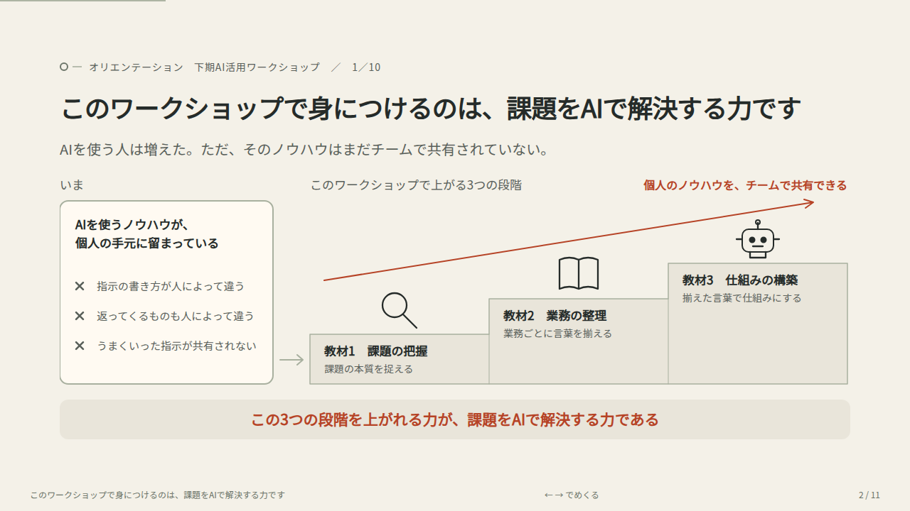
はじめに、このワークショップで何を身につけていただくのかをお話しします。
業務でAIを使う人は、増えてきました。
ただ、チームとして使いこなせているかというと、まだそうなっていない職場が多いのではないでしょうか。
同じ作業をAIに頼んでも、人によって、AIへの指示、いわゆるプロンプトの書き方が違い、返ってくるものも違います。
うまくいった指示があっても、それを知っているのは書いた本人だけです。
その結果、AIを使うノウハウは個人の手元に留まり、チームで共有されません。
では、このノウハウをチームで共有するには、何が必要でしょうか。
このワークショップでは、3つの段階を順に上がることだと考えています。
3つの段階は、そのまま3つの教材になっています。
1段目は、教材1、課題の把握です。
AIに頼む前に、業務の課題の本質を捉えて、言葉にできるようになります。
2段目は、教材2、業務の整理です。
同じ言葉が業務ごとに違うものを指していることを確かめて、業務ごとに言葉を揃えられるようになります。
3段目は、教材3、仕組みの構築です。
揃えた言葉で、AIが課題を解決する仕組みを作れるようになります。
仕組みになっていれば、書いた本人でなくても、同じように使えます。
ここまで上がれば、個人が持っていたノウハウを、チームで共有できるようになります。
この3つの段階を上がれる力を、このワークショップでは、課題をAIで解決する力と呼びます。
3つの教材を通して、この力を身につけていただきます。
| 観点の群 | 結果 | 見つけたこと | 直したこと |
|---|---|---|---|
| スライドと原稿の整合 | 修正 | 見出しの「課題をAIで解決する力」を、原稿で一度も言い切っていなかった | 締めを「この3つの段階を上がれる力を、課題をAIで解決する力と呼びます」にした |
| 論とストーリー | 修正 | 「何があればチームで使えるようになるか」と問いを立て、答えずに構成の話へ移っていた | 問いの直後に「3つの段階を順に上がること」と答え、段階が3つの教材になると続けた |
| 日本語 | 修正 | 「ノウハウやスキル」「AIのノウハウ」が混在し、「確実に」は根拠の無い強調だった | 「AIを使うノウハウ」に統一し、「確実に」を削除した |
| 見出しと導入文 | 修正 | 導入文の「共有できる形」の「形」が何を指すか定まらなかった | 「そのノウハウはまだチームで共有されていない」にした |
| 図の表現 | 修正 | 階段の3段が表紙の3つの教材と対応していなかった。強調色が6か所に散っていた | 3段を教材1 ・ 2 ・ 3にし、表紙と同じ印にした。強調は行き先と帯だけにした |
| 表示の不良と読みやすさ | 修正 | 左下の表題が22文字で切れていた（全枚に共通） | 見出しの全文を出すようにした |
| 動画の文体と構成 | 問題なし | 適用し、問題は無かった |
1つの案件に、3つの業務が関わっています
変更なし ── 開いて見る

ここからは、3つの教材を通して使う、1つの案件を題材に話を進めます。
経費精算システムを入れ替える案件です。
本番の切り替えは、3か月後と決まっています。
この案件には、3つの業務が関わっています。
1つめは、経費の精算業務です。
経理が、日々の精算と支払を担当しています。
2つめは、案件の進行管理です。
PMが、本番の切り替えまで案件が止まらないように進めています。
3つめは、システムの開発です。
開発が、新しいシステムの画面や、周辺のシステムとの連携を作っています。
この3つの業務の担当者が、週に1回、定例に集まります。
定例で決まったことと、まだ決まっていないことは、書記が議事録にまとめます。
この議事録が、教材1でAIに渡すものになります。
| 観点の群 | 結果 | 見つけたこと | 直したこと |
|---|---|---|---|
| スライドと原稿の整合 | 問題なし | 適用し、問題は無かった | |
| 論とストーリー | 修正 | 議事録が教材1の作業とどうつながるかが示されていなかった | 原稿の末尾に「この議事録が、教材1でAIに渡すものになります」を足した |
| 日本語 | 問題なし | 適用し、問題は無かった | |
| 見出しと導入文 | 修正 | 導入文の「同じ案件の上で進む」が不自然だった | 「3つの教材とも、この1つの案件を題材にして進める」にした |
| 図の表現 | 修正 | 定例と議事録が文字だけの帯で、業務 → 定例 → 議事録の流れを図でたどれなかった。PMの箱だけが理由なく強調されていた | 3つの業務から線が合流して定例へ入り、議事録へ進む図にした。強調は案件の箱だけにした |
| 表示の不良と読みやすさ | 修正 | 説明文が15pxの灰色で読みにくく、PMの箱の説明が枠に接していた | 16pxの本文の色にし、枠に収まる言い方にした |
| 動画の文体と構成 | 問題なし | 適用し、問題は無かった |
PMは、業務ごとの課題が進行にどう影響するかを判断しています
変更なし ── 開いて見る

この案件で、PMが毎週どんな仕事をしているかを見てみます。
定例では、それぞれの業務の立場から課題が挙がります。
経理からは、締め日の運用を変えないと、月末の支払が回らなくなる、という課題が出ます。
開発からは、既存システムとの連携の仕様が決まらないので、作り始められない、という課題が出ます。
同じ課題という言葉ですが、経理が言っているのは日々の精算が止まることで、開発が言っているのは実装が進まないことです。
PMが知りたいのは、そのどちらでもありません。
案件の進行が止まるかどうかです。
そこでPMは定例のあと、議事録を読み返して、挙がった課題を1件ずつ読み解きます。
それが案件の進行にどう影響するのか。
いつまでに、誰が決めないと、どの作業が止まるのか。
たとえば連携の仕様は、9月16日までに開発が決めないと、連携の開発を始められません。
締め日は、9月30日までに経理が決めないと、運用の準備が進みません。
それなら、連携の仕様を先に決める、と判断します。
こうして1件ずつ、次に何を、いつまでに、誰が決めればいいのかを判断し、スケジュールと照らして、どれから決めるかの優先順位を付けます。
遅れが見えれば、スケジュールを引き直し、工数を見積もり、要員を調整し、必要なら業務部門にも相談します。
この一連の作業に、毎週かなりの時間がかかっています。
これが、いま困っていることです。
| 観点の群 | 結果 | 見つけたこと | 直したこと |
|---|---|---|---|
| スライドと原稿の整合 | 修正 | 図に置いた9/16 ・ 9/30の例が原稿に無かった | 原稿に同じ例を1段落足した |
| 論とストーリー | 問題なし | 適用し、問題は無かった | |
| 日本語 | 修正 | 「進行にどう効くか」の「効く」、「見極め」が和語の述部だった | 「影響する」「判断し」にした |
| 見出しと導入文 | 修正 | 導入文が見出しを繰り返していた | 「同じ『課題』という言葉でも、経理と開発とPMでは、指すものが違う」にした |
| 図の表現 | 修正 | 要点（同じ課題でも経理 ・ 開発 ・ PMで指すものが違う）が13pxの灰色に埋もれていた。文字の箱を3列に並べた図だった | 発言を吹き出しで示し、PMが見ている本番切り替えまでの線表に置いて、どの作業が止まるか ・ 期限 ・ 担当 ・ 順番を示した |
| 表示の不良と読みやすさ | 問題なし | 適用し、問題は無かった | |
| 動画の文体と構成 | 問題なし | 適用し、問題は無かった |
時間がかかる原因は、判断の基準がPMの頭の中にしかないことです
変更なし ── 開いて見る

時間がかかる、というだけでは、何を用意すれば短くなるのかが分かりません。
そこで、なぜ時間がかかるのかを掘り下げます。
手間がかかっているのは、書き出す作業そのものではありません。
それぞれの業務の言葉で挙がった課題を汲み取り、案件の進行にとって何を意味するのかを判断するところです。
どれが次に決めるべきことで、どれがそうでないのか。
いつまでに、誰が決めればいいのか。
PMはその判断を、議事録とスケジュールと自分の記憶を突き合わせながら、毎回その場でしています。
判断の基準が、PMの頭の中にしかないのです。
これが、この場面での課題の本質です。
基準が頭の中にしかないと、2つのことが起きます。
1つは、PM自身が毎回その場で考え直すことになり、時間がかかることです。
もう1つは、その判断をほかの人に渡せないことです。
PMの補佐に任せたくても、後任に引き継ぎたくても、何を基準にしているのかを伝えられません。
任された人は自分なりの基準で課題を選ぶので、選ばれる課題も、並ぶ順番も変わってしまいます。
はじめに、人によってAIへの指示の書き方が違い、返ってくるものも違う、とお話ししました。
その原因も、ここにあります。
基準が言葉になっていないので、指示に何を書くかが人によって変わるのです。
では、何があれば解決するのか。
PMの頭の中にある基準を、言葉にしておくことです。
言葉になっていれば、補佐にも後任にも渡せますし、AIへの指示にも書けます。
この基準は、2つの部分でできています。
1つは、PMにとっての課題の捉え方です。
何を課題として取り上げ、何を添え、どの順に並べるか。
もう1つは、それぞれの業務の言葉の読み方です。
経理や開発が言う課題が、何を指しているのか。
そこで、このワークショップは3つの段階で進めます。
まず、PMにとっての課題の捉え方を言葉にして、AIへの指示に書く。
次に、業務ごとに違う言葉の中身を確かめて、揃える。
最後に、それを誰が使っても同じように動く仕組みにする。
この3つの段階が、そのまま3つの教材になります。
3つの教材とも、いまの場面を題材にして進めていきます。
| 観点の群 | 結果 | 見つけたこと | 直したこと |
|---|---|---|---|
| スライドと原稿の整合 | 修正 | 帯の「ほかの人にもAIにも渡せる」が原稿に無かった | 原稿に「補佐にも後任にも渡せますし、AIへの指示にも書けます」を足した |
| 論とストーリー | 問題なし | 適用し、問題は無かった | |
| 日本語 | 修正 | 「汲み取れるようにする」「載る課題」が、指す操作と対象を特定できなかった | 「中身を確かめて、揃える」「課題を選ぶので、選ばれる課題も」にした |
| 見出しと導入文 | 修正 | 見出し「作るものが決まります」が、何が決まるかを言い切っていなかった | 「時間がかかる原因は、判断の基準がPMの頭の中にしかないことです」にした |
| 図の表現 | 修正 | 文字の箱を3列に並べた図で、強調色が9か所に散っていた | 「いま」と「基準を言葉にすると」を左右に並べ、補佐 ・ 後任 ・ AIへ渡せない ・ 渡せるを対にした |
| 表示の不良と読みやすさ | 問題なし | 適用し、問題は無かった | |
| 動画の文体と構成 | 問題なし | 適用し、問題は無かった |
業務は、いくつもの作業でできています
変更なし ── 開いて見る
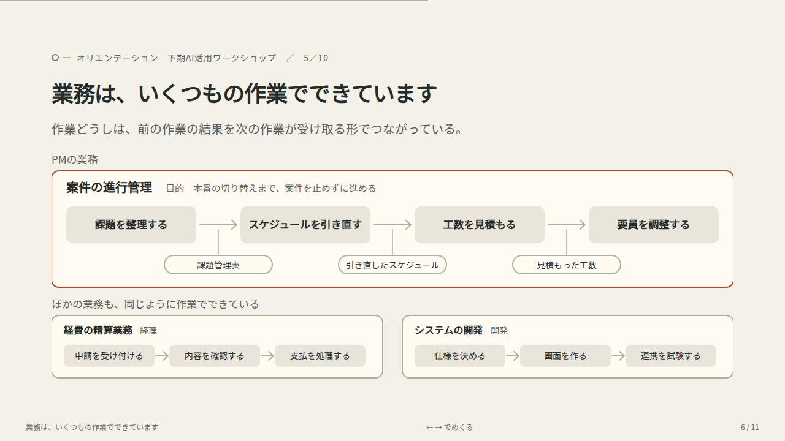
では、教材1はこの場面のどこから始めるのか。
それを決めるために、業務をもう一段細かく見ます。
PMが受け持っているのは、案件の進行管理です。
本番の切り替えまで、案件を止めずに進める。
これがこの業務の目的です。
ただ、案件を進める、というだけでは大きすぎて、何をするのかが決まりません。
さきほどの場面で、PMがしていたことを思い出してください。
課題を整理する、スケジュールを引き直す、工数を見積もる、要員を調整する。
実際にPMがしているのは、こうした、もっと小さい単位の仕事です。
この1つずつを、作業と呼びます。
作業どうしは、前の作業の結果を次の作業が受け取る形でつながっています。
課題を整理した結果の課題管理表を受け取って、スケジュールを引き直す、という具合です。
業務は、いくつもの作業でできています。
経理にも、開発にも、それぞれの業務があり、それぞれの作業が並んでいます。
経理なら、申請を受け付ける、内容を確認する、支払を処理する。
開発なら、仕様を決める、画面を作る、連携を試験する、といった作業です。
| 観点の群 | 結果 | 見つけたこと | 直したこと |
|---|---|---|---|
| スライドと原稿の整合 | 修正 | 図の経理と開発の作業、課題管理表が原稿に無かった | 原稿に同じ例と課題管理表を足した |
| 論とストーリー | 問題なし | 適用し、問題は無かった | |
| 日本語 | 問題なし | 適用し、問題は無かった | |
| 見出しと導入文 | 修正 | 導入文が鉤括弧なしで語句を名詞化し、見出しと重複していた | 「作業どうしは、前の作業の結果を次の作業が受け取る形でつながっている」にした |
| 図の表現 | 修正 | 業務の箱と作業の一覧を矢印でつないだだけで、包含と受け渡しが見えなかった | 業務の枠の中に作業を並べ、作業のあいだに渡すものを置いた。経理と開発の業務も実物の作業で示した |
| 表示の不良と読みやすさ | 問題なし | 適用し、問題は無かった | |
| 動画の文体と構成 | 問題なし | 適用し、問題は無かった |
教材1は、そのうちの1つの作業から始めます
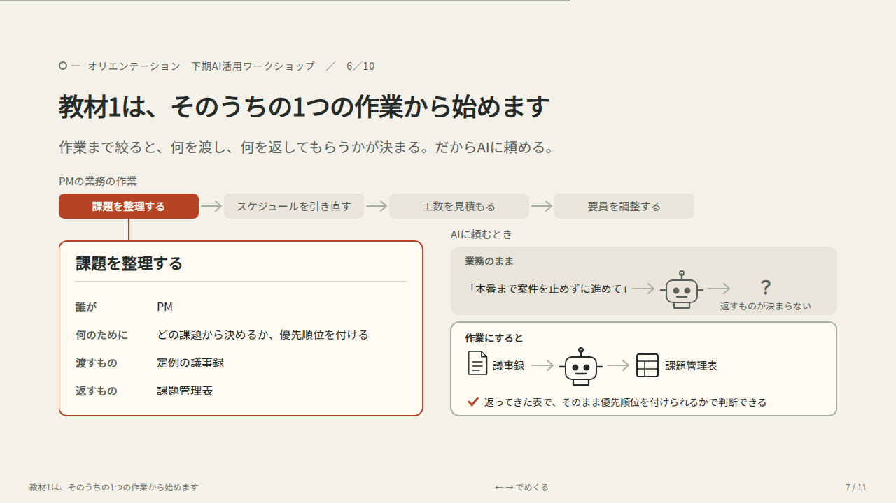
教材1では、このうち、課題を整理する、という作業を取り上げます。
実際の案件では、課題は定例だけでなく、日々のやり取りのあちこちから挙がってきます。
ここでは話を分かりやすくするために、定例の議事録だけを対象にします。
PMが議事録を読んで、次に決めなければならないことを特定し、いつまでに誰が決めるかを添えて、課題管理表にまとめる。
これが、教材1で扱う作業です。
この課題管理表ができれば、どの課題から決めるかの優先順位が分かります。
PMはそれを受け取って、次の作業でスケジュールを引き直します。
誰が、何のためにするのか。
何を渡し、何を返してもらうのか。
この4つは、このあと指示を書くときの前提になります。
では、なぜ業務全体ではなく、この1つの作業から始めるのでしょうか。
業務全体のままでは、AIに何を頼めばいいかが決まらないからです。
本番まで案件を止めずに進めて、とAIに頼んでも、AIの側は何を返せばいいのかが決まりません。
課題を整理する、という作業まで絞ると、頼むことがはっきりします。
議事録を渡して、課題管理表を返してもらう、ということです。
返ってきた課題管理表で、そのまま優先順位を付けられるか。
それを見れば、うまくいったかどうかも判断できます。
ですから、教材1はこの作業から始めます。
そして最後まで、この1つの作業だけを使って進めます。

教材1では、このうち、課題を整理する、という作業を取り上げます。
実際の案件では、課題は定例だけでなく、日々のやり取りのあちこちから挙がってきます。
ここでは話を分かりやすくするために、定例の議事録だけを対象にします。
PMが議事録を読んで、次に決めなければならないことを特定し、いつまでに誰が決めるかを添えて、課題管理表にまとめる。
これが、教材1で扱う作業です。
この課題管理表ができれば、どの課題から決めるかの優先順位が分かります。
PMはそれを受け取って、次の作業でスケジュールを引き直します。
誰が、何のためにするのか。
何を渡し、何を返してもらうのか。
この4つは、このあと指示を書くときの前提になります。
では、なぜ業務全体ではなく、この1つの作業から始めるのでしょうか。
業務全体のままでは、AIに何を頼めばいいかが決まらないからです。
本番まで案件を止めずに進めて、とAIに頼んでも、AIの側は何を返せばいいのかが決まりません。
課題を整理する、という作業まで絞ると、頼むことがはっきりします。
議事録を渡して、課題管理表を返してもらう、ということです。
返ってきた課題管理表で、そのまま優先順位を付けられるか。
それを見れば、うまくいったかどうかも判断できます。
ですから、教材1はこの作業から始めます。
そして最後まで、この1つの作業だけを使って進めます。
| 観点の群 | 結果 | 見つけたこと | 直したこと |
|---|---|---|---|
| スライドと原稿の整合 | 修正 | 4項目の読み上げ順と語がカードと違っていた | 「誰が、何のためにするのか。何を渡し、何を返してもらうのか」にした |
| 論とストーリー | 問題なし | 適用し、問題は無かった | |
| 日本語 | 問題なし | 適用し、問題は無かった | |
| 見出しと導入文 | 問題なし | 適用し、問題は無かった | |
| 図の表現 | 修正 | 前の枚から1つの作業を選んだことが図に無く、対比を文字の箱2つで説明していた | 上に作業の並びを置いて選んだ1つを塗り、AIへの頼み方を2行で対比した |
| 表示の不良と読みやすさ | 問題なし | 適用し、問題は無かった | |
| 表示の不良と読みやすさ | 修正 | 矢印の検査を足して見つかった。AIから「？」への矢印が、約40px手前で止まっていた | 矢印を「？」の手前まで伸ばした |
| 動画の文体と構成 | 修正 | 「図の右側で比べます」と位置だけで説明していた | その1文を削除した |
教材2は、3つの業務の言葉を、業務ごとに揃えます
変更なし ── 開いて見る

教材2は、業務の整理です。
教材1の終わりには、PMから見た課題管理表ができます。
たとえば、9月16日までに、開発が連携の仕様を決める。
9月30日までに、経理が申請の締め日を決める。
そうした行が、期限の順に並びます。
ただ、この表には、決めるのにどれだけの手間がかかるのか、決まらなかったときにどんな影響が出るのかが入っていません。
期限も、定例でそれぞれの業務が言った日付を、そのまま写したものです。
これでは、その期限が守れるのかも、どの課題を先に決めるべきなのかも、PMには判断できません。
手間と影響が分からないのは、それぞれの業務で、課題という言葉が何を指しているのかを見ていないからです。
開発にとっての課題は、実装が進まない要因です。
経理にとっての課題は、日々の精算が止まる要因です。
教材2では、経費の精算業務、案件の進行管理、システムの開発の3つの業務で、言葉が何を指しているのかを確かめ、業務ごとに揃えます。
その業務の言葉で課題を読めるようになると、手間と影響が分かり、期限と優先順位に裏付けが付きます。
この考え方には名前があります。
その名前は、教材2の中で紹介します。
| 観点の群 | 結果 | 見つけたこと | 直したこと |
|---|---|---|---|
| スライドと原稿の整合 | 問題なし | 適用し、問題は無かった | |
| 論とストーリー | 修正 | オリエンテーションに教材2の概要が無かった | 教材1の課題管理表の空欄を、各業務の言葉で読むと補完できる、という枚を追加した。用語は出さず、教材2で紹介すると予告した |
| 日本語 | 問題なし | 適用し、問題は無かった | |
| 見出しと導入文 | 問題なし | 適用し、問題は無かった | |
| 図の表現 | 問題なし | 適用し、問題は無かった | |
| 表示の不良と読みやすさ | 問題なし | 適用し、問題は無かった | |
| 動画の文体と構成 | 問題なし | 適用し、問題は無かった |
教材3は、揃えた言葉を、誰が使っても同じに動く仕組みにします
変更なし ── 開いて見る

教材3は、仕組みの構築です。
教材1と教材2で、指示に書くことと、業務ごとの言葉が決まります。
ただ、それが文書のままだと、使う人が毎回それを読んで、指示に書き写すことになります。
書き写す人によって、また違いが出ます。
教材3では、毎回書くのをやめて、決めたことを仕組みに置いておきます。
意味は、Skillに置きます。
呼ぶたびに、同じ意味で動きます。
範囲は、MCPで、見に行く情報源を決めた範囲に限定します。
条件は、Hookで、必ず入れるものが入っているかを機械で確認します。
目的が2つある依頼は、目的ごとに分けて、Agentで別々の担当に割り当てます。
ただし、AIにすべてを任せる仕組みではありません。
返ってきた課題管理表を、PMが確認して承認する。
そういう形を目指します。
そうすれば、PMでなくても、補佐でも後任でも、同じ基準で課題を整理できます。
| 観点の群 | 結果 | 見つけたこと | 直したこと |
|---|---|---|---|
| スライドと原稿の整合 | 保留 | 道具の1行説明は、道具編の台本がまだ無い状態で書き起こした | 道具編の台本を作るときに照合する |
| 論とストーリー | 修正 | オリエンテーションに教材3の概要が無かった | 意味 ・ 範囲 ・ 条件 ・ 目的ごとの依頼を Skill ・ MCP ・ Hook ・ Agent に置き、PMが確認して承認する流れの枚を追加した |
| 日本語 | 問題なし | 適用し、問題は無かった | |
| 見出しと導入文 | 問題なし | 適用し、問題は無かった | |
| 図の表現 | 問題なし | 適用し、問題は無かった | |
| 表示の不良と読みやすさ | 問題なし | 適用し、問題は無かった | |
| 動画の文体と構成 | 問題なし | 適用し、問題は無かった |
教材が進むごとに、扱う範囲が広がります
変更なし ── 開いて見る
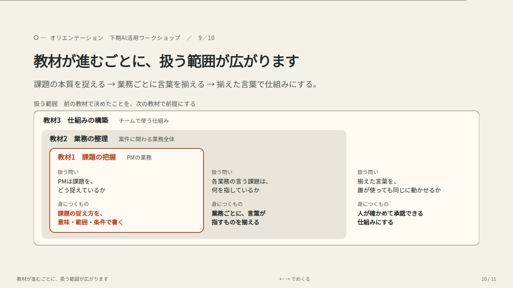
ここまでの3つの教材を、扱う範囲で並べてみます。
教材1は、PMの業務の中で、PMにとっての課題の捉え方を言葉にします。
教材2は、案件に関わる業務全体へ広げて、業務ごとの言葉を揃えます。
教材3は、それをチームで使う仕組みにします。
前の教材で決めたことを、次の教材では前提にして進みます。
ですから、教材が1つ進むごとに、扱う範囲がPMの業務から、案件に関わる業務全体へ、そしてチームで使う仕組みへと広がっていきます。
| 観点の群 | 結果 | 見つけたこと | 直したこと |
|---|---|---|---|
| スライドと原稿の整合 | 問題なし | 適用し、問題は無かった | |
| 論とストーリー | 修正 | 扱う問いと身につくものが手段（指示に書く ・ 道具名）で書かれ、抽象の高さが揃っていなかった | 本質（PMの課題の捉え方 ・ 各業務の課題が指すもの ・ 人が承認できる仕組み）で書いた |
| 日本語 | 問題なし | 適用し、問題は無かった | |
| 見出しと導入文 | 問題なし | 適用し、問題は無かった | |
| 図の表現 | 修正 | 同じ大きさのカード3枚で、範囲の広がりが形に表れていなかった | 入れ子の枠にし、扱う問いと身につくものの高さを揃えた |
| 表示の不良と読みやすさ | 問題なし | 適用し、問題は無かった | |
| 動画の文体と構成 | 問題なし | 適用し、問題は無かった |
3つの教材に共通する土台は、業務の言葉を揃えることです
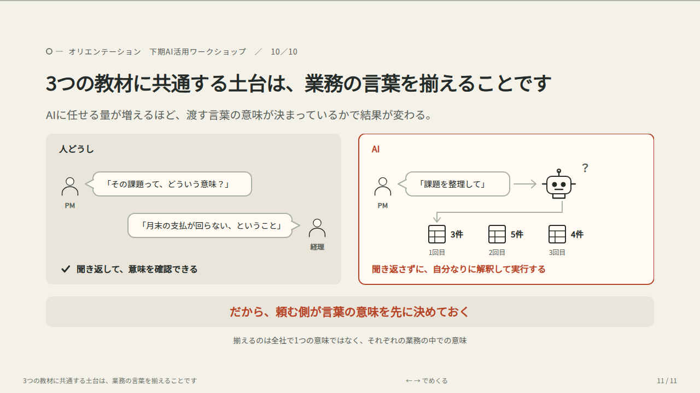
最後に、3つの教材に共通する土台をお話しします。
3つの教材とも、やっていることの中心は、業務で使う言葉を揃えることです。
教材1ではPMにとっての課題を言葉にし、教材2では業務ごとの言葉を揃え、教材3では揃えた言葉を、仕組みの中でもそのまま使います。
揃えるといっても、全社で1つの意味に統一するのではありません。
それぞれの業務の中で、その業務での意味に揃える、ということです。
では、なぜいま、言葉を揃えることを土台に置くのか。
AIに任せる仕事が増えているからです。
人どうしなら、言葉が少しずれていても、その課題って、どういう意味ですか、と聞き返して確認できます。
AIは聞き返しません。
渡された言葉を自分なりに解釈して、そのまま実行します。
たとえば、課題を整理して、とだけ頼むと、AIは課題という言葉を、頼むたびに自分なりに解釈します。
ですから、同じ議事録を渡しても、返ってくる表は、3件だったり、5件だったり、4件だったりします。
教材1の最初の動画では、この状態から始めます。
ですから、頼む側が、その言葉が何を指すのかを先に決めておく必要があります。
それでは、教材1に進みます。
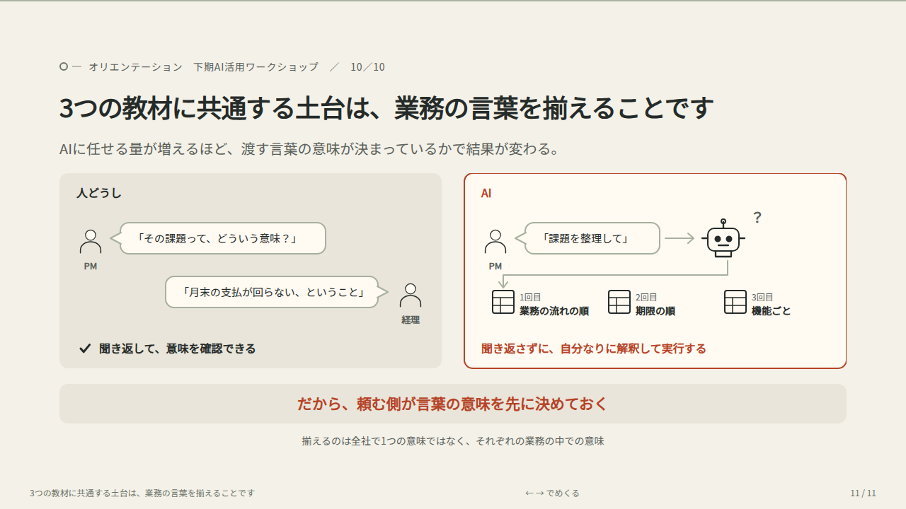
最後に、3つの教材に共通する土台をお話しします。
3つの教材とも、やっていることの中心は、業務で使う言葉を揃えることです。
教材1ではPMにとっての課題を言葉にし、教材2では業務ごとの言葉を揃え、教材3では揃えた言葉を、仕組みの中でもそのまま使います。
揃えるといっても、全社で1つの意味に統一するのではありません。
それぞれの業務の中で、その業務での意味に揃える、ということです。
では、なぜいま、言葉を揃えることを土台に置くのか。
AIに任せる仕事が増えているからです。
人どうしなら、言葉が少しずれていても、その課題って、どういう意味ですか、と聞き返して確認できます。
AIは聞き返しません。
渡された言葉を自分なりに解釈して、そのまま実行します。
たとえば、課題を整理して、とだけ頼むと、AIは課題という言葉を、頼むたびに自分なりに解釈します。
ですから、同じ議事録を渡しても、返ってくる表は、業務の流れの順だったり、期限の順だったり、機能ごとだったりします。
教材1の最初の動画では、この状態から始めます。
ですから、頼む側が、その言葉が何を指すのかを先に決めておく必要があります。
それでは、教材1に進みます。
| 観点の群 | 結果 | 見つけたこと | 直したこと |
|---|---|---|---|
| スライドと原稿の整合 | 問題なし | 適用し、問題は無かった | |
| 論とストーリー | 修正 | 上の段が4枚目 ・ 8枚目 ・ 10枚目と重複していた | この枚にしかない主張（人は聞き返すがAIは聞き返さない）を主役にした |
| 日本語 | 問題なし | 適用し、問題は無かった | |
| 見出しと導入文 | 問題なし | 適用し、問題は無かった | |
| 図の表現 | 修正 | 主張が下の小さな2つの箱に押し込まれていた | 人どうしの会話と、AIが頼むたびに違う並べ方（業務の流れの順・期限の順・機能ごと）の表を返す場面を左右に描いた。当初の件数（3件・5件・4件）は本編に無い古いデータだったので、原因を知る動画の3回と同じ並べ方の違いへ直した |
| 表示の不良と読みやすさ | 問題なし | 適用し、問題は無かった | |
| 動画の文体と構成 | 問題なし | 適用し、問題は無かった |
教材1のはじめに
課題の把握
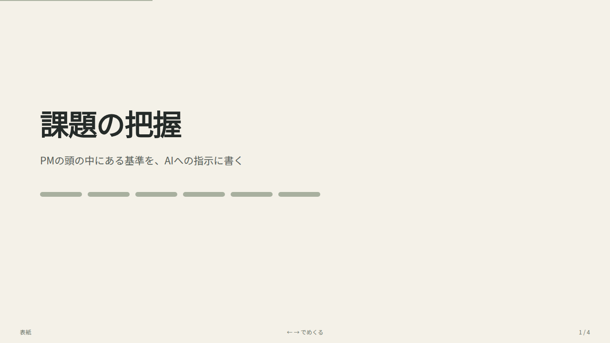
導入文 PMの頭の中にある基準を、AIへの指示に書く
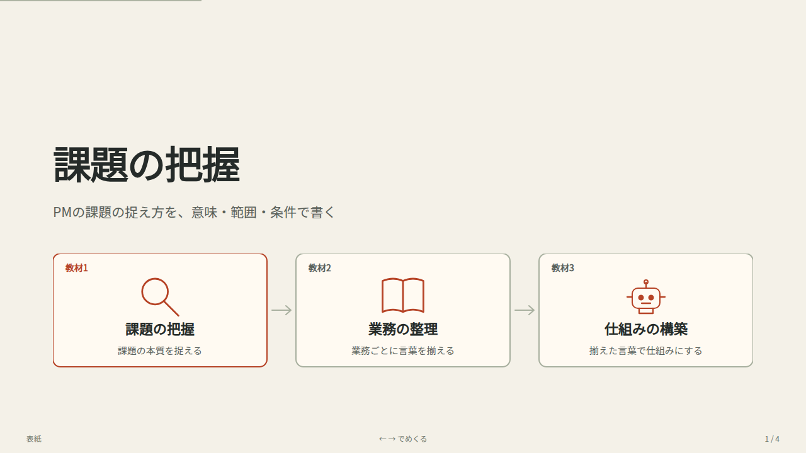
導入文 PMの課題の捉え方を、意味・範囲・条件で書く
| 観点の群 | 結果 | 見つけたこと | 直したこと |
|---|---|---|---|
| スライドと原稿の整合 | 問題なし | 適用し、問題は無かった | |
| 論とストーリー | 修正 | 副題「PMの頭の中にある基準を、AIへの指示に書く」が、オリエンテーションで決めた教材1の言い方（課題の捉え方を、意味・範囲・条件で書く）と一致していなかった | 副題を「PMの課題の捉え方を、意味・範囲・条件で書く」にした |
| 日本語 | 問題なし | 適用し、問題は無かった | |
| 見出しと導入文 | 問題なし | 適用し、問題は無かった | |
| 図の表現 | 修正 | ラベルの無い灰色の棒6本が並ぶだけで、どれも光っておらず、何も示していなかった。オリエンテーションとまとめの表紙と形が違った | 3つの教材のカードを並べ、教材1を強調した。まとめの表紙と同じ形にした |
| 表示の不良と読みやすさ | 問題なし | 適用し、問題は無かった | |
| 動画の文体と構成 | 問題なし | 適用し、問題は無かった |
この教材では、課題の捉え方を意味・範囲・条件の3つで書きます
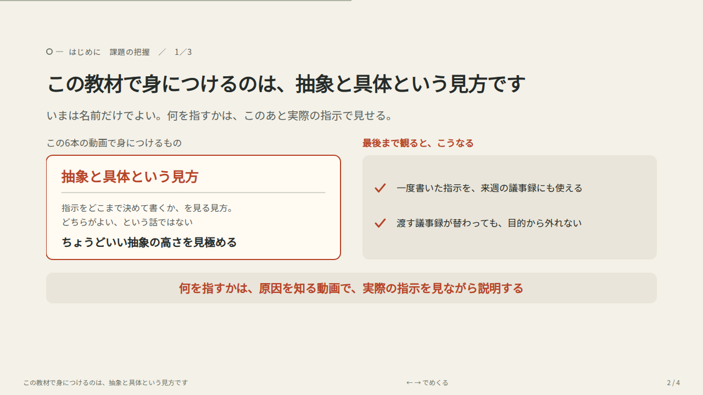
見出し この教材で身につけるのは、抽象と具体という見方です
導入文 いまは名前だけでよい。何を指すかは、このあと実際の指示で見せる。
ここから、教材1が始まります。
オリエンテーションで、PMの頭の中にある基準を言葉にして、AIへの指示に書く、とお話ししました。
教材1では、それをどう書けばいいのかを扱います。
そのときに役に立つのが、抽象と具体という見方です。
この教材で身につけていただくのは、この見方1つです。
いまは名前だけ覚えておいてください。
何を指すのかは、1本目で実際の指示を見ながら説明します。
この見方が身につくと、2つのことができるようになります。
1つめは、一度書いた指示を、来週の議事録にもそのまま使えることです。
別の案件でも、案件を指すところを替えるだけで使えます。
2つめは、渡す議事録が替わっても、返ってくるものが目的から外れなくなることです。
この2つめが、この教材でいちばん持ち帰っていただきたいところです。
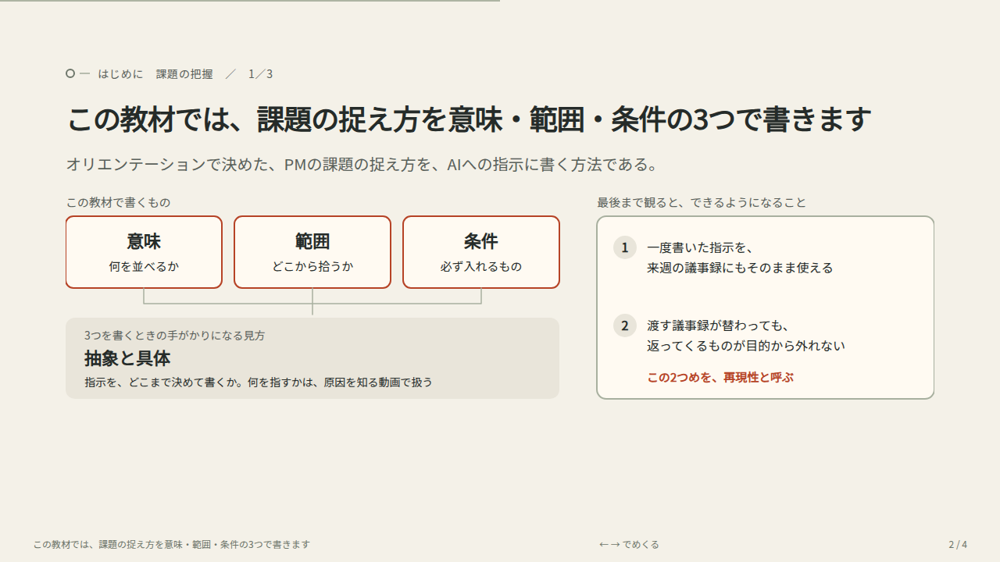
見出し この教材では、課題の捉え方を意味・範囲・条件の3つで書きます
導入文 オリエンテーションで決めた、PMの課題の捉え方を、AIへの指示に書く方法である。
ここから、教材1が始まります。
オリエンテーションで、PMにとっての課題の捉え方を言葉にして、AIへの指示に書く、とお話ししました。
教材1では、それを実際にどう書けばいいのかを扱います。
書くのは、意味、範囲、条件の3つです。
1つずつの中身は、このあとの動画で順に扱います。
そして、この3つを書くときの手がかりになるのが、抽象と具体という見方です。
指示を、どこまで決めて書くか、という見方です。
いまは名前だけ覚えておいてください。
何を指すのかは、原因を知る動画で、実際の指示を見ながら説明します。
3つを書くことが、この見方とどうつながるのかは、本編の最後の動画で振り返ります。
最後まで観ると、2つのことができるようになります。
1つめは、一度書いた指示を、来週の議事録にもそのまま使えることです。
別の案件でも、案件を指すところを替えるだけで使えます。
2つめは、渡す議事録が替わっても、返ってくるものが目的から外れなくなることです。
この教材では、これを再現性と呼びます。
この2つめが、この教材でいちばん持ち帰っていただきたいところです。
| 観点の群 | 結果 | 見つけたこと | 直したこと |
|---|---|---|---|
| スライドと原稿の整合 | 修正 | 原稿が引くオリエンテーションの言い方（PMの頭の中にある基準を言葉にして…）が、直す前のものだった。2つめの結果に、締めの結論の語（再現性）が付いていなかった | 「PMにとっての課題の捉え方を言葉にして、AIへの指示に書く」にし、2つめを「この教材では、これを再現性と呼びます」とした |
| 論とストーリー | 修正 | 身につけるものを「抽象と具体という見方」1つとしており、オリエンテーションの「課題の捉え方を、意味・範囲・条件で書く」と別のものに聞こえた | 書くもの（意味・範囲・条件）を主役にし、抽象と具体はその手がかりの見方として位置づけた。見出しを「この教材では、課題の捉え方を意味・範囲・条件の3つで書きます」にした |
| 論とストーリー | 修正 | 利用者の指摘で、本編の原因を知る動画で初めて説明する「抽象の高さ」を、はじめにの時点で説明なしに使っていた | この時点で伝わる言葉に置き換えた（1枚目は「3つを書くときの手がかりにするのが、抽象と具体という見方である」、2枚目は「3つを書き足すと、指示の中で決まっていることが、1つずつ増えていきます」） |
| 日本語 | 修正 | 図の「抽象の高さを見極める」の「見極める」が和語の述部だった。導入文に「6本目」という制作側の番号があった | 「見極める」を外し、振り返る場所は動画の題（抽象の高さを合わせる動画）で指した |
| 見出しと導入文 | 修正 | 導入文と下の帯が、同じこと（何を指すかは後で説明する）を言っていた | 導入文を「3つを書くことが、そのまま指示の抽象の高さを合わせることになる」にし、帯を外した |
| 図の表現 | 修正 | 結果の2項目にチェック印を付けていたが、原稿は1つめ・2つめと数えている | 番号で並べた。3つの札の下に、手がかりの見方を線で渡した |
| 表示の不良と読みやすさ | 問題なし | 適用し、問題は無かった | |
| 動画の文体と構成 | 問題なし | 適用し、問題は無かった | |
| 動画の文体と構成 | 修正 | 確認し直した結果、原稿で動画の指し方が「1本目」と動画の題で混在していた。「〜になる、ということは」の接続が「だから」にも聞こえた | 「原因を知る動画で」にそろえ、2文に分けた |
1つの指示に3つを書き足し、返ってくるものの変化を見ていきます
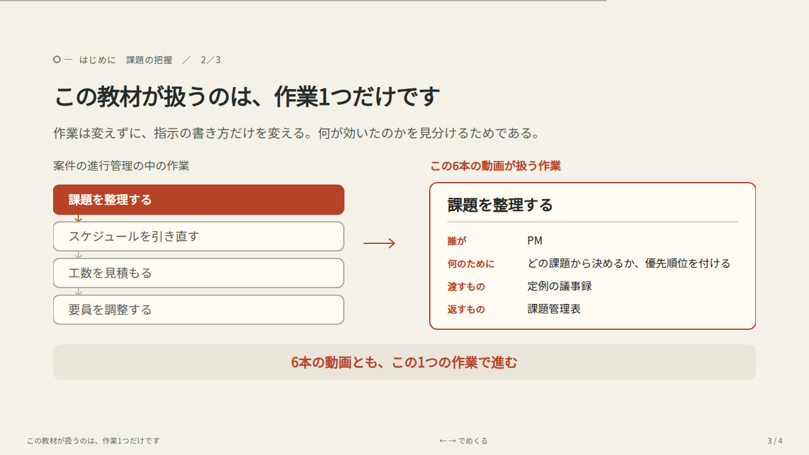
見出し この教材が扱うのは、作業1つだけです
導入文 作業は変えずに、指示の書き方だけを変える。何が効いたのかを見分けるためである。
オリエンテーションでお話ししたとおり、この教材で扱うのは、課題を整理する、という作業1つだけです。
PMが定例の議事録を受け取り、課題管理表を返す。
目的は、どの課題から決めるか、優先順位を付けることです。
案件の進行管理には、スケジュールを引き直す、工数を見積もる、要員を調整する、といったほかの作業もありますが、この教材では扱いません。
作業を1つに絞るのは、指示の書き方だけを変えて、返ってくるものがどう変わるかを見たいからです。
作業のほうまで一緒に変えてしまうと、どちらが効いたのかが分からなくなります。
ですので、誰が実行し、何を受け取り、何を返し、何のためにするのか。
この4つは、最後まで変えずに進めます。
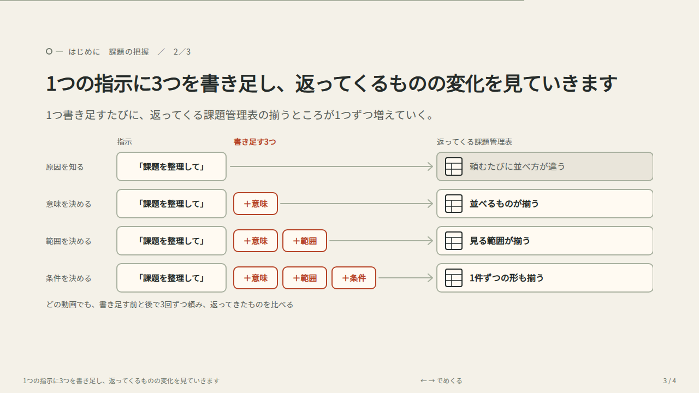
見出し 1つの指示に3つを書き足し、返ってくるものの変化を見ていきます
導入文 1つ書き足すたびに、返ってくる課題管理表の揃うところが1つずつ増えていく。
この教材で追いかけるのは、たった1つの指示です。
課題を整理して、という指示です。
PMが、定例の議事録をAIに渡して、課題管理表を返してもらうときに使います。
この指示のままだと、返ってくる課題管理表は、頼むたびに違います。
並べ方が毎回変わるのです。
そこで、この指示に、意味、範囲、条件の3つを、1つずつ書き足していきます。
3つを書き足すと、指示の中で決まっていることが、1つずつ増えていきます。
1つ書き足すたびに、返ってくる課題管理表がどう変わるのかを、動画を追って見ていきます。
意味を書き足すと、並べるものが揃います。
範囲を書き足すと、見る範囲が揃います。
条件を書き足すと、1件ずつの形が揃います。
どの動画でも、書き足す前と後で3回ずつ頼み、返ってきたものを比べます。
そうすると、何が揃ったのかが、書き足した1文の効果として見えてきます。
| 観点の群 | 結果 | 見つけたこと | 直したこと |
|---|---|---|---|
| スライドと原稿の整合 | 修正 | 原稿の4項目の順と語（何を受け取り・何を返し）が、オリエンテーションで直した形とずれていた | 「誰が、何のためにするのか。何を渡し、何を返してもらうのか」にした。指示を1つずつ足す流れと、3回ずつ頼んで比べることを原稿に足した。「同じ議事録を渡して」は、範囲を決める動画から5週分を渡すので誤りだった。「議事録を渡して」にした |
| 論とストーリー | 修正 | 「何が効いたのかを見分ける」理由が、原稿の末尾にしか無かった | 原稿の結論を「返ってくる表の違いは、指示の書き方の違いから来ている、と言えます」にした |
| 論とストーリー | 修正 | 利用者の指摘で、原稿が「6本」をまだ示していない時点で使い、「作業は変えない」という不要な念押しが中心になっていた。この枚で伝えるべき進め方（3回頼む → 比べる → 1文を書き足す → もう一度頼む）が欠けていた | 見出しを「どの動画も、3回頼んで比べ、指示に書き足していきます」にし、原稿を進め方と、書き足すたびに揃うものを中心に書き直した。図の左を、題材の作業1行と、進め方の3つの手順と戻る矢印にした |
| 論とストーリー | 修正 | 利用者の指摘で、原稿が手順（3回頼む → 比べる → 書き足す）の説明に寄り、この教材の筋（「課題を整理して」に抽象の高さを決める3つを書き足すと、返ってくるものがどう変わるかを見る）が前に出ていなかった | 原稿を、追いかける1つの指示 → 3つを1つずつ書き足す → 返ってくる課題管理表の変化、の順に書き直し、手順は最後の補足にした。図は、指示が1文ずつ長くなり、返ってくる課題管理表の揃うところが増える形にした |
| 論とストーリー | 修正 | 利用者の指摘で、本編の原因を知る動画で初めて説明する「抽象の高さ」を、はじめにの時点で説明なしに使っていた | この時点で伝わる言葉に置き換えた（1枚目は「3つを書くときの手がかりにするのが、抽象と具体という見方である」、2枚目は「3つを書き足すと、指示の中で決まっていることが、1つずつ増えていきます」） |
| 日本語 | 問題なし | 適用し、問題は無かった | |
| 日本語 | 修正 | 確認し直した結果、「最初は」と「この教材では」が、それぞれ2回続いていた | 「書き足す前は」「そして、」にした |
| 見出しと導入文 | 修正 | 見出し「この教材が扱うのは、作業1つだけです」はオリエンテーションの繰り返しで、作業を固定する理由を言い切っていなかった | 見出しを「作業は1つに固定し、指示の書き方だけを変えて比べます」にし、導入文を「作業を変えないので、返ってくる表の違いは、指示の書き方の違いから来る」にした |
| 図の表現 | 修正 | 図がオリエンテーション7枚目とほぼ同じ形（作業の並びから1つを選ぶ形と4項目のカード）で、この枚にしかない主張を示していなかった | 左に変えないもの（作業と4項目）、右に変えるもの（動画ごとに意味・範囲・条件を足す指示）を置き、どの段でも3回ずつ頼んで比べることを示した。右端は「3回頼んだ結果」として、段ごとに揃うもの（並べ方が毎回違う → 並べるもの → 見る範囲 → 1件ずつの形）を言葉で示した |
| 表示の不良と読みやすさ | 問題なし | 適用し、問題は無かった | |
| 表示の不良と読みやすさ | 修正 | 矢印の検査を足して見つかった。札の少ない行で、矢印の根元が空白から出ていた | 矢印を、その行の最後の札のすぐ右から出すようにした |
| 動画の文体と構成 | 問題なし | 適用し、問題は無かった |
6本の動画で、この順に進みます
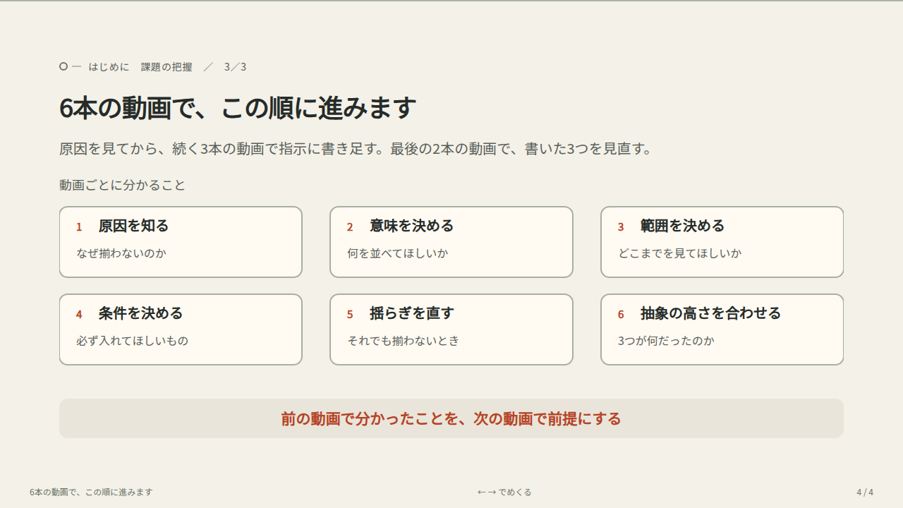
導入文 原因を見てから、続く3本の動画で指示に書き足す。最後の2本の動画で、書いた3つを見直す。
この教材は、いまの案内と、最後のまとめを入れて8本の動画でできています。
本編は6本の動画で、大きく4つに分かれます。
はじめの動画では、原因を知ります。
同じ指示を出しているのに、返ってくるものが毎回違う。
その原因がどこにあるのかを見ます。
続く3本の動画で、指示に3つのことを書き足していきます。
意味、範囲、条件の3つです。
意味は、AIに何を並べてほしいかです。
範囲は、渡したもののどこまでを見てほしいかです。
条件は、1件ずつに必ず入れるもの、一覧から落とすもの、そして並べる順です。
この3つが、オリエンテーションでお話しした、PMの頭の中にある基準の中身になります。
そのあとの動画では、3つを書いても揃わないときに、どこを見ればいいかを扱います。
最後の動画では、ここまでやってきたことが、そもそも何だったのかを振り返ります。
1本目で説明する抽象と具体の見方に、ここで戻ってきます。
前の動画で分かったことを、次の動画では分かっているものとして進めますので、この順に観てください。
それでは、1本目に進みます。
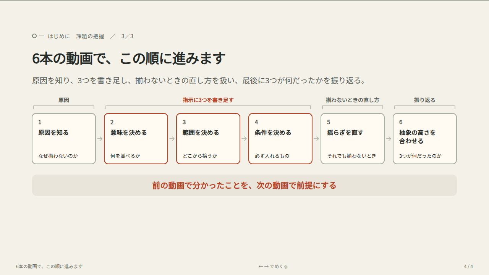
導入文 原因を知り、3つを書き足し、揃わないときの直し方を扱い、最後に3つが何だったかを振り返る。
最後に、この先の進み方をお話しします。
本編は6本の動画です。
まず、原因を知る動画で、課題を整理して、とだけ頼んだときに、なぜ返ってくるものが揃わないのかを見ていきます。
原因が分かったら、続く3本の動画で、意味、範囲、条件を1つずつ指示に書き足していきます。
1本進むごとに、返ってくる課題管理表が少しずつ揃っていきます。
それでも、揃わないことがあります。
揺らぎを直す動画では、そういうときに、どこを見ればいいかを扱います。
そして本編の最後、抽象の高さを合わせる動画で、ここまで書き足してきた3つが、そもそも何だったのかを振り返ります。
どの動画も、前の動画で分かったことを使って進みます。
ですから、この順に観てください。
それでは、原因を知る動画から始めます。
| 観点の群 | 結果 | 見つけたこと | 直したこと |
|---|---|---|---|
| スライドと原稿の整合 | 修正 | 範囲の説明が「どこまでを見てほしいか」で、ほかの枚の「どこから拾うか」と違った。「PMの頭の中にある基準の中身」が、直す前のオリエンテーションの言い方だった | 図と原稿を「どこから拾うか」にした。「PMにとっての課題の捉え方の中身」にした |
| 論とストーリー | 問題なし | 適用し、問題は無かった | |
| 日本語 | 問題なし | 適用し、問題は無かった | |
| 見出しと導入文 | 修正 | 導入文の「見直す」が和語の述部だった | 「原因を知り、3つを書き足し、揃わないときの直し方を扱い、最後に3つが何だったかを振り返る」にした |
| 図の表現 | 修正 | 6枚のカードを2段3列に並べていて、原稿の「大きく4つに分かれる」区切りと順番が図から読み取れなかった | 6本を横一列の順に並べ、上に4つの区切り（原因／指示に3つを書き足す／揃わないときの直し方／振り返る）を示した |
| 表示の不良と読みやすさ | 問題なし | 適用し、問題は無かった | |
| 動画の文体と構成 | 修正 | 「最後の動画」がまとめの動画とまぎれ、「1本目」と動画の題が混在していた | 「本編の最後の動画」「原因を知る動画」にした |
| 動画の文体と構成 | 修正 | 利用者の指摘で、原稿の流れが止まっていた。冒頭に数（8本・6本・4つ）が続き、3つの説明が1枚目 ・ 2枚目に続いて3度目で、動画ごとの文の形がそろわず、締めも硬かった。「一覧から落とすもの」の「一覧」も統一した語と違った | 図の4つの区切り（原因 → 3つを書き足す → 揃わないとき → 振り返る）の順に、1つの話として書き直した。3つの説明と数の列挙を外し、締めを「どの動画も、前の動画で分かったことを使って進みます」にした |
1本目 原因を知る
原因を知る
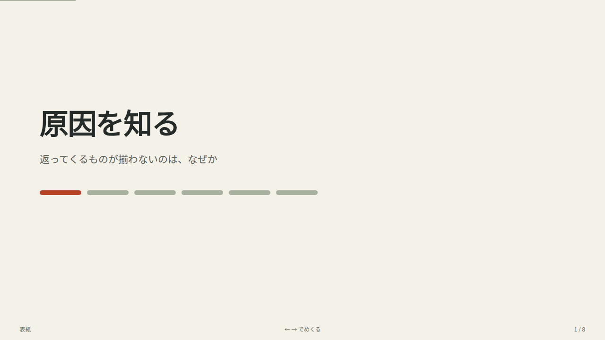
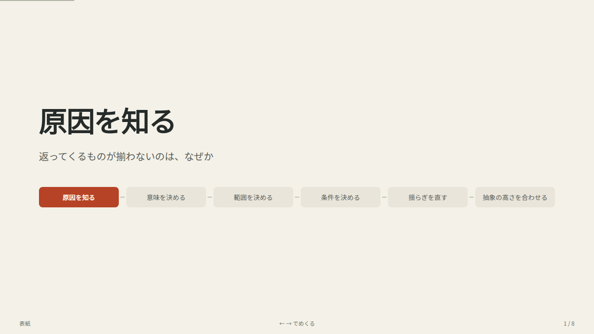
| 観点の群 | 結果 | 見つけたこと | 直したこと |
|---|---|---|---|
| スライドと原稿の整合 | 問題なし | 適用し、問題は無かった | |
| 論とストーリー | 問題なし | 適用し、問題は無かった | |
| 日本語 | 問題なし | 適用し、問題は無かった | |
| 見出しと導入文 | 問題なし | 適用し、問題は無かった | |
| 図の表現 | 修正 | 6本の棒のうち1本が赤いだけで、ラベルが無く、何を示すか読み取れなかった | 6本の動画の名前の札を順に並べ、いまの1本だけを塗った。はじめにの「6本の動画で、この順に進みます」と同じ名前と順にした |
| 表示の不良と読みやすさ | 問題なし | 適用し、問題は無かった | |
| 動画の文体と構成 | 問題なし | 適用し、問題は無かった |
決まっている作業を、AIに頼んでみます
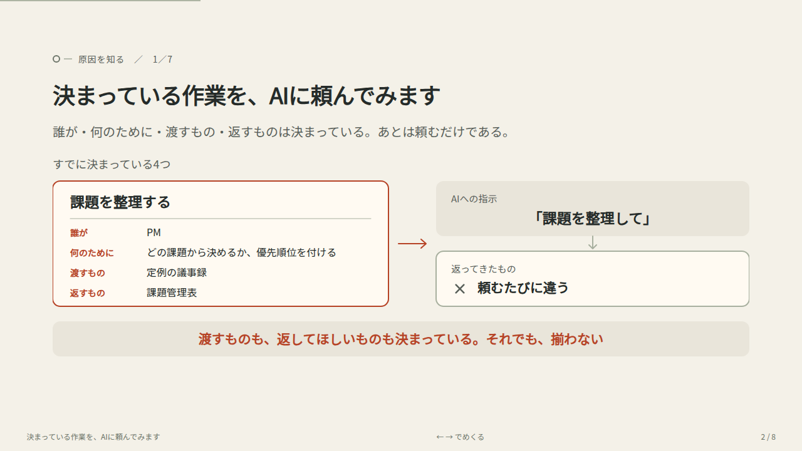
導入文 誰が・何のために・渡すもの・返すものは決まっている。あとは頼むだけである。
では、始めます。
扱うのは、課題を整理する、という作業です。
誰が、何を受け取り、何を返し、何のためにするのかは、もう決まっています。
あとはAIに頼むだけのはずです。
そこで、定例の議事録を渡して、課題を整理して、とだけ指示してみます。
ところが、何度か頼むと、返ってくるものが毎回違います。
この動画では、なぜそうなるのかを見ていきます。
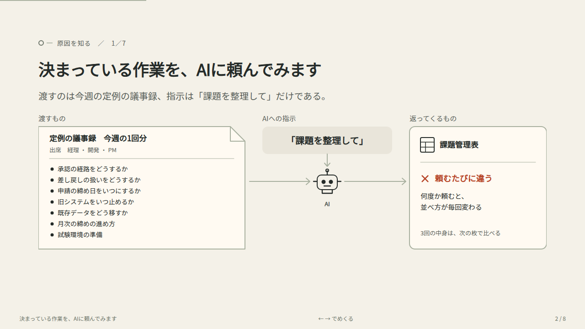
導入文 渡すのは今週の定例の議事録、指示は「課題を整理して」だけである。
では、始めます。
扱うのは、課題を整理する、という作業です。
誰が、何のためにするのか。
何を渡し、何を返してもらうのか。
この4つは、もう決まっています。
あとはAIに頼むだけのはずです。
渡すのは、今週の定例の議事録です。
経理と開発とPMが出席していて、承認の経路や申請の締め日など、決めなければならないことがいくつも出ています。
この議事録を渡して、課題を整理して、とだけ指示してみます。
ところが、何度か頼むと、返ってくる課題管理表が毎回違います。
この動画では、なぜそうなるのかを見ていきます。
| 観点の群 | 結果 | 見つけたこと | 直したこと |
|---|---|---|---|
| スライドと原稿の整合 | 修正 | 原稿の4項目の順と語（何を受け取り、何を返し、何のために）が、統一した形とずれていた。議事録の中身に触れていなかった | 「誰が、何のためにするのか。何を渡し、何を返してもらうのか」にし、出席者と議題の例を1文足した |
| 論とストーリー | 問題なし | 適用し、問題は無かった | |
| 日本語 | 問題なし | 適用し、問題は無かった | |
| 見出しと導入文 | 修正 | 導入文が4項目の繰り返しだった | 「渡すのは今週の定例の議事録、指示は「課題を整理して」だけである」にした |
| 図の表現 | 修正 | 左の4項目のカードは、オリエンテーション7枚目・はじめにの2枚目に続いて3回目だった。右の「頼むたびに違う」は、次の枚で3回の中身を示すので予告にとどまっていた。渡す議事録の中身は、どの枚にも出ていなかった | 左に渡す議事録の中身（出席者と議題7件）、中央に指示とAI、右に返ってくる課題管理表を置いた。議題は意味を決める動画の1枚目の原稿と同じにした |
| 表示の不良と読みやすさ | 問題なし | 適用し、問題は無かった | |
| 表示の不良と読みやすさ | 修正 | 利用者の指摘で、議事録から出る矢印がAIの手前の空白で止まり、AIから出る矢印もAIから離れていた | 両方の矢印を、AIの左右の端に届く位置と高さに直した。図の検査に、矢印の両端が何かに届いているかの検査を足した |
| 表示の不良と読みやすさ | 修正 | 利用者の指摘で、中央の列（指示の枠とAI）の中心が、左右の枠のあいだの中間から右へ22pxずれていた | 中央の列を、議事録の右端と右の枠の左端の中間（x=632）を中心に置き直した |
| 動画の文体と構成 | 問題なし | 適用し、問題は無かった |
同じ指示を何度か使うと、2つの困り方が出てきます
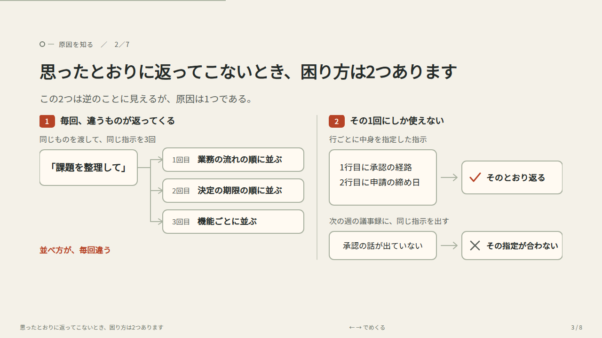
見出し 思ったとおりに返ってこないとき、困り方は2つあります
思ったとおりに返ってこないとき、困り方は2つあります。
渡しているのは、定例の議事録です。
承認の経路や、申請の締め日をどうするか、といった話が出ています。
1回目に頼むと、業務の流れの順に並んだ一覧が返ってきます。
申請して、承認して、支払う、という順です。
もう一度同じように頼むと、今度は決定の期限の順に並んだ一覧が返ってきます。
さらにもう一度頼むと、今度は機能ごとに並んでいます。
同じ議事録を渡して、同じ指示を出しているのに、返ってくるものが違う。
これが1つめの困り方です。
では、細かく書けばいいのかというと、今度は別のことが起きます。
1行目に承認の経路、2行目に申請の締め日、と行ごとに指定してみます。
たしかに、そのとおりのものが返ってきます。
ただ、来週の議事録では、その指定がもう合いません。
毎週、書き直すことになります。
これが2つめの困り方です。
この2つは、逆のことのように見えますが、もとは同じ1つの原因から起きています。
その原因を、次に見ます。
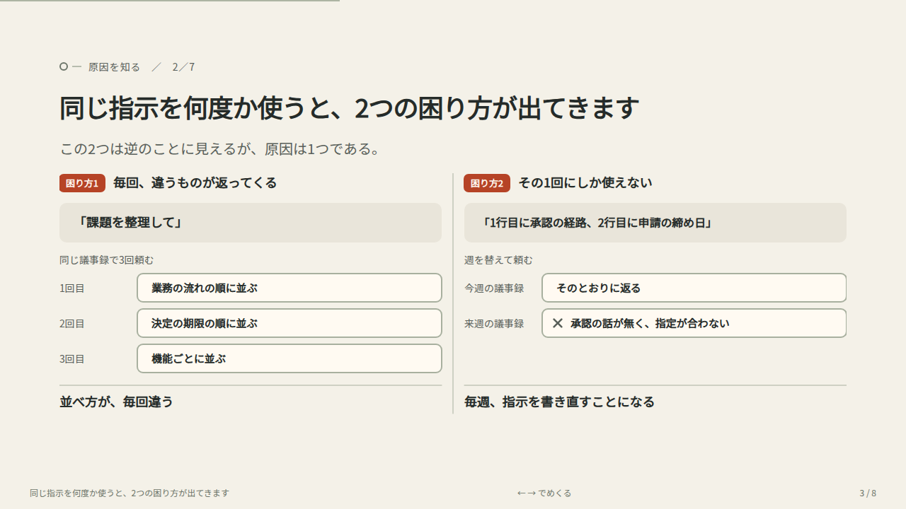
見出し 同じ指示を何度か使うと、2つの困り方が出てきます
指示を1回使うだけなら、困ることはあまりありません。
困るのは、同じ指示を何度か使ったときです。
困り方は2つあります。
1つめは、課題を整理して、とだけ書いた指示です。
同じ議事録を渡して、3回頼んでみます。
1回目は、業務の流れの順に並んだ課題管理表が返ってきます。
2回目は、決定の期限の順です。
3回目は、機能ごとです。
同じ議事録に、同じ指示を出しているのに、並べ方が毎回違います。
これが1つめの困り方です。
では、並べ方まで細かく書けばいいのでしょうか。
2つめは、1行目に承認の経路、2行目に申請の締め日、と行ごとに中身を指定した指示です。
今週の議事録を渡すと、たしかにそのとおりに返ってきます。
ところが、来週の議事録には、承認の話が出ていません。
そうなると、この指定はもう合いません。
毎週、指示を書き直すことになります。
これが2つめの困り方です。
1つめは、書いていないことが多い指示で起きました。
2つめは、細かく書き込んだ指示で起きました。
逆のことのように見えますが、もとは同じ1つの原因から起きています。
その原因を、次に見ます。
| 観点の群 | 結果 | 見つけたこと | 直したこと |
|---|---|---|---|
| スライドと原稿の整合 | 修正 | 原稿が返ってくるものを「一覧」と呼び、統一した語「課題管理表」と違った。冒頭で、直前の枚で話した議事録の中身を繰り返していた | 「課題管理表」にし、冒頭を「まず、同じ議事録を渡して、課題を整理して、と3回頼んでみます」にした |
| スライドと原稿の整合 | 修正 | 利用者の指摘で、原稿がスライドと合わず、伝えたいことが原稿に起きていなかった。見出しと冒頭の「思ったとおりに返ってこないとき」が、思ったとおりに返ってくる困り方2に当てはまらなかった。困り方2の理由（来週は承認の話が出ていない）が抜け、締めで2つが何の逆なのかを言っていなかった | 見出しを「同じ指示を何度か使うと、2つの困り方が出てきます」にした。原稿を、困り方1（指示 → 同じ議事録で3回 → 並べ方が毎回違う）、困り方2（指示 → 今週はそのとおり → 来週は承認の話が無く合わない → 毎週書き直す）、2つは逆に見えて原因は1つ、の順に書き直した |
| 論とストーリー | 問題なし | 適用し、問題は無かった | |
| 日本語 | 修正 | ラベル「同じものを渡して、同じ指示を3回」の「同じもの」が、何を指すか分かりにくかった | 「同じ議事録を渡して、同じ指示で3回頼む」にした |
| 見出しと導入文 | 問題なし | 適用し、問題は無かった | |
| 図の表現 | 修正 | 左の困り方1だけに締めの一言が強調色で浮き、右の困り方2には締めが無かった。左右の下端の高さもそろっていなかった | 左右とも、同じ高さ ・ 同じ形の締めにした（並べ方が、毎回違う／毎週、指示を書き直すことになる） |
| 図の表現 | 修正 | 利用者の指摘で確認し直した。困り方の札が赤い四角と数字で、次の枚の「困り方1 ・ 2」の札と違った。左は枝分かれ、右は枠と矢印の2段で、左右の形がそろっていなかった。右上の「そのとおり返る」に強調色のチェック印が付き、うまくいった結果を目立たせていた | 左右を同じ形（札と題 → 指示 → 試した結果の行 → 締め）で作り直した。左は1回目〜3回目、右は今週 ・ 来週の議事録の行にし、札を次の枚と同じ「困り方1 ・ 2」にした。強調色は札だけにした |
| 表示の不良と読みやすさ | 問題なし | 適用し、問題は無かった | |
| 動画の文体と構成 | 問題なし | 適用し、問題は無かった |
原因は、指示をどこまで決めて書いたかです

導入文 では、その原因は何か。いまの2つの指示を、どこまで決めて書いたかで並べてみる。
では、なぜそうなるのか。
いまの2つの指示を、並べてみます。
1つめは、課題を整理して、という指示です。
この指示は、何をどう並べるかを、ほとんど決めていません。
ですから、業務の流れの順に並べても、決定の期限の順に並べても、機能ごとに並べても、どれも指示どおりです。
どれが返ってくるかは、頼むたびに変わります。
そのかわり、どの週の議事録にも、どの案件の議事録にも使えます。
2つめは、1行目に承認の経路、2行目に申請の締め日、という指示です。
こちらは、何をどう並べるかを細かく決めています。
ですから、返ってくるものは指定どおりの1つに決まります。
そのかわり、使えるのはこの議事録だけです。
来週の議事録に承認の経路の話が出ていなければ、もう使えません。
つまり、決めていないことが多いほど、どこでも使えますが、返ってくるものは決まりません。
細かく決めるほど、返ってくるものは決まりますが、その1回にしか使えなくなります。
2つの困り方は、この両端で起きていたのです。
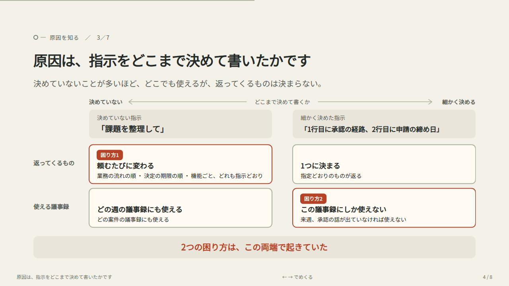
導入文 決めていないことが多いほど、どこでも使えるが、返ってくるものは決まらない。
では、なぜそうなるのか。
いまの2つの指示を、並べてみます。
1つめは、課題を整理して、という指示です。
この指示は、何をどう並べるかを、ほとんど決めていません。
ですから、業務の流れの順に並べても、決定の期限の順に並べても、機能ごとに並べても、どれも指示どおりです。
どれが返ってくるかは、頼むたびに変わります。
そのかわり、どの週の議事録にも、どの案件の議事録にも使えます。
2つめは、1行目に承認の経路、2行目に申請の締め日、という指示です。
こちらは、何をどう並べるかを細かく決めています。
ですから、返ってくるものは指定どおりの1つに決まります。
そのかわり、使えるのはこの議事録だけです。
来週の議事録に承認の経路の話が出ていなければ、もう使えません。
つまり、決めていないことが多いほど、どこでも使えますが、返ってくるものは決まりません。
細かく決めるほど、返ってくるものは決まりますが、その1回にしか使えなくなります。
2つの困り方は、この両端で起きていたのです。
| 観点の群 | 結果 | 見つけたこと | 直したこと |
|---|---|---|---|
| スライドと原稿の整合 | 修正 | 図が決めていない指示の返り方を「4つとも指示どおり」とし、4つ目に「3つを混ぜたもの」を置いていた。原稿は3通りしか話していない | 図を3通り（業務の流れの順・決定の期限の順・機能ごと）にした |
| 論とストーリー | 問題なし | 適用し、問題は無かった | |
| 日本語 | 問題なし | 適用し、問題は無かった | |
| 見出しと導入文 | 修正 | 導入文が問いと手順（その原因は何か。並べてみる）だけで、主張を述べていなかった | 「決めていないことが多いほど、どこでも使えるが、返ってくるものは決まらない」にした |
| 図の表現 | 修正 | この枚の主張は2つの指示の引き換え（どこでも使えるが決まらない／決まるが1回にしか使えない）なのに、図は返ってくるものの側しか示さず、前の枚の困り方が両端で起きていることが読めなかった | 行を2つの指示、列を「返ってくるもの」「使える議事録」にした比較にし、困り方1 ・ 2の札を、それぞれが起きるマスの太字の文の頭に置いた |
| 図の表現 | 修正 | 利用者の指摘で、元の図の配置を下敷きに直したため、2つの困り方の札が、左の列の中ほどと右の列の下という別々の位置に出ていた | 構造から作り直した。上に「決めていない ↔ 細かく決める」の軸、左右に2つの指示、行に「返ってくるもの」「使える議事録」を置いた2列×2行の格子にし、4つのマスを同じ形にした。困り方のマスだけ、強調色の枠と左上の同じ位置の札で示した |
| 表示の不良と読みやすさ | 問題なし | 適用し、問題は無かった | |
| 動画の文体と構成 | 問題なし | 適用し、問題は無かった |
どこまで決めずに書いているかの度合いが、抽象の高さです
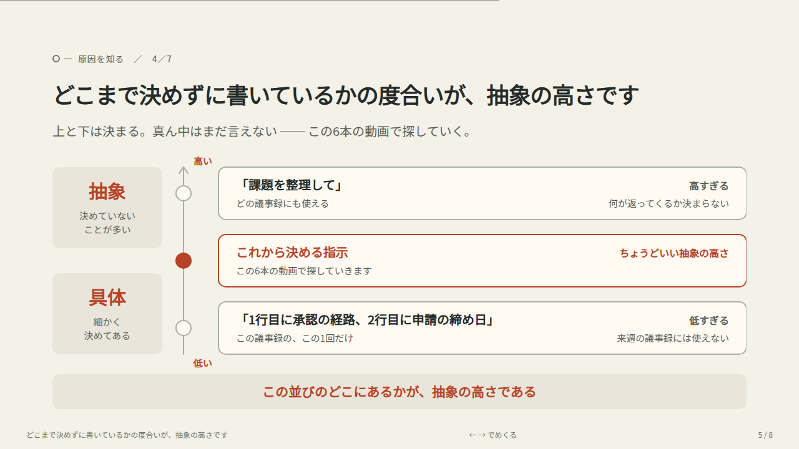
導入文 上と下は決まる。真ん中はまだ言えない ── この6本の動画で探していく。
ここで、名前を付けておきます。
細かいことを決めずに書いた指示を、抽象と呼びます。
課題を整理して、はこちらです。
細かいことまで決めて書いた指示を、具体と呼びます。
1行目に承認の経路、2行目に申請の締め日、はこちらです。
そして、どこまで決めずに書いているかの度合いを、抽象の高さと呼びます。
抽象の高さが上がるほど、どこでも使えますが、返ってくるものは決まりません。
下がるほど、返ってくるものは決まりますが、使える場面が限られます。
どちらが正しい、ということではありません。
目的に合った、ちょうどいい高さがあります。
それがどこにあるのかを、この教材で探していきます。

導入文 決めずに残していることが多いほど、抽象の高さは高くなる。
ここで、2つの指示に名前を付けておきます。
課題を整理して、のように、細かいことを決めずに書いた指示を、抽象と呼びます。
1行目に承認の経路、2行目に申請の締め日、のように、細かいことまで決めて書いた指示を、具体と呼びます。
そして、指示をどこまで決めずに書いているか、その度合いを、抽象の高さと呼びます。
決めずに残していることが多いほど、抽象の高さは高くなります。
前の枚で見た両端を、この言葉で言い直すと、こうなります。
抽象の高さが高いほど、どこでも使えますが、返ってくるものは決まりません。
低いほど、返ってくるものは決まりますが、その1回にしか使えません。
どちらかが正しいわけではありません。
そのあいだのどこかに、目的に合った、ちょうどいい高さがあります。
それがどこにあるのかは、目的によって決まります。
この教材では、その高さを探していきます。
| 観点の群 | 結果 | 見つけたこと | 直したこと |
|---|---|---|---|
| スライドと原稿の整合 | 問題なし | 適用し、問題は無かった | |
| 論とストーリー | 問題なし | 適用し、問題は無かった | |
| 日本語 | 問題なし | 適用し、問題は無かった | |
| 見出しと導入文 | 修正 | 導入文「上と下は決まる。真ん中はまだ言えない」は、何の上と下かが伝わらなかった。帯が見出しと同じことを言っていた | 導入文を「細かいことを決めずに書いた指示が抽象、細かく決めて書いた指示が具体である」にし、帯を外した |
| 図の表現 | 修正 | 強調色が抽象 ・ 具体 ・ 高い ・ 低い ・ 中央の枠 ・ 帯の6か所に散っていた。上下の指示に、目的を説明する前に「高すぎる」「低すぎる」の判定が付いていた。上下の特徴の言い方が前の枚と違った | 強調を中央の「目的に合う、ちょうどいい高さ」（破線の枠）だけにした。判定を外し、上下の特徴を前の枚の格子と同じ言い方にした |
| 図の表現 | 修正 | 利用者の指摘で確認し直した。「抽象の高さ」の文字が軸の中央の点の横にあり、中央の点が抽象の高さと読めた。ちょうどいい高さを真ん中の1点で示し、真ん中が正解と読めた。抽象 ・ 具体の呼び名が左端に離れていた | 「抽象の高さ」を軸の上端に置いた。ちょうどいい高さは軸上の範囲で示し、「このあいだのどこかにある。どこにあるかは目的で決まる」と添えた。抽象 ・ 具体を各枠の中の札にした |
| 図の表現 | 修正 | 利用者の指摘で、抽象 ・ 具体を枠の中の小さな札にしたため、この枚で覚えてほしい2語が目立たなくなり、前の版より分かりにくくなった | 左に大きな「抽象」「具体」を置く前の版の形に戻した。そのうえで、「抽象の高さ」を軸の上端へ移し、ちょうどいい高さを軸上の範囲で示す直しだけを残した |
| 表示の不良と読みやすさ | 問題なし | 適用し、問題は無かった | |
| 動画の文体と構成 | 問題なし | 適用し、問題は無かった | |
| 動画の文体と構成 | 修正 | 原稿の「課題を整理して、はこちらです」が位置で指す言い方だった。前の枚の両端の言い直しであることを言わずに繰り返していた。「どちらが正しい、ということではありません」が不自然だった | 「課題を整理して、のように」と例で示した。「前の枚で見た両端を、この言葉で言い直すと、こうなります」と前置きし、「どちらかが正しいわけではありません」にした |
抽象の高さが目的に合うと、渡すものを替えても目的から外れません
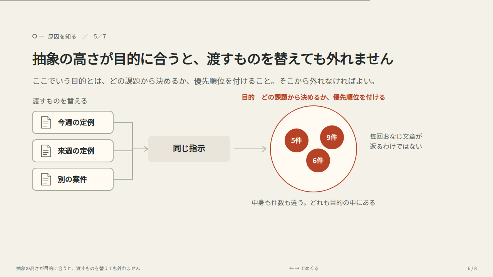
見出し 抽象の高さが目的に合うと、渡すものを替えても外れません
導入文 ここでいう目的とは、どの課題から決めるか、優先順位を付けること。そこから外れなければよい。
では、抽象の高さが目的に合っていると、何が起きるのでしょうか。
まず、ここでいう目的を確認しておきます。
この指示の目的は、どの課題から決めるか、優先順位を付けることです。
目的が決まると、返ってきてほしいものの幅も決まります。
その幅に収まっていれば、中身が多少違っても困りません。
抽象の高さが目的に合っていると、渡す議事録を替えても、返ってくるものがその幅に収まります。
今週の議事録を渡しても、来週の議事録を渡しても、返ってくるものの形は同じです。
別の案件の議事録でも同じです。
もちろん、返ってくる中身や件数は違います。
ここは誤解されやすいところです。
毎回まったく同じ文章が返ってくる、ということではありません。
頼む相手が人でもAIでも、そこまで同じにはなりません。
そうではなく、返ってくるものが目的から外れなくなる、ということです。
まったく同じ文章を目指すと、指定がどんどん細かくなります。
そうすると、さきほどの、その1回にしか使えない指示に戻ってしまいます。
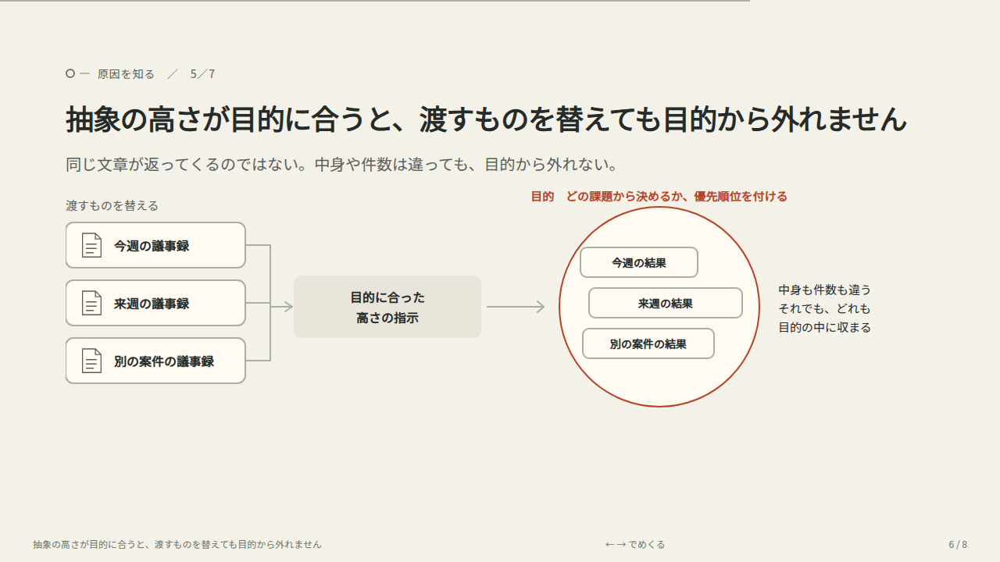
見出し 抽象の高さが目的に合うと、渡すものを替えても目的から外れません
導入文 同じ文章が返ってくるのではない。中身や件数は違っても、目的から外れない。
では、抽象の高さが目的に合っていると、何が起きるのでしょうか。
まず、ここでいう目的を確認しておきます。
この指示の目的は、どの課題から決めるか、優先順位を付けることです。
優先順位を付けられる課題管理表が返ってくれば、並べ方や書き方が多少違っても、困りません。
これが、目的の中に収まっている、ということです。
目的に合った高さまで書いた指示なら、渡す議事録を替えても、返ってくるものは目的の中に収まります。
今週の議事録でも、来週の議事録でも、別の案件の議事録でも同じです。
ただし、ここは誤解されやすいところです。
毎回まったく同じ文章が返ってくる、ということではありません。
中身も件数も、渡した議事録ごとに違います。
頼む相手が人でもAIでも、そこまで同じにはなりません。
変わらないのは、返ってくるものが目的から外れない、という点です。
逆に、まったく同じ文章を目指すと、指定がどんどん細かくなります。
そうすると、さきほどの、その1回にしか使えない指示に戻ってしまいます。
| 観点の群 | 結果 | 見つけたこと | 直したこと |
|---|---|---|---|
| スライドと原稿の整合 | 修正 | 原稿の「返ってくるものの形は同じです」が、結果の幅が違う図と食い違って聞こえた | 「返ってくるものは、どれも目的の中に収まります」にした |
| 論とストーリー | 問題なし | 適用し、問題は無かった | |
| 日本語 | 問題なし | 適用し、問題は無かった | |
| 見出しと導入文 | 修正 | 導入文が図の上の目的の文と同じことを言っていた。見出しの「外れません」が何から外れないのかを言っていなかった | 導入文を「同じ文章が返ってくるのではない。中身や件数は違っても、目的から外れない」にし、見出しを「…目的から外れません」にした |
| 図の表現 | 修正 | 図の「同じ指示」がどの指示か分からなかった。円の中の「5件・9件・6件」が本編の結果と対応せず（9件は範囲を書き足す前の数）、左の3つの入力とも対応していなかった。強調色が円 ・ 目的の文 ・ 3つの丸に散っていた | 指示を「目的に合った高さの指示」にし、円の中の結果を左の3つの入力に対応させた（今週 ・ 来週 ・ 別の案件の結果）。結果の幅と位置を少しずつ変え、違っても円の中に収まる様子を示した。強調は円と目的の文だけにした |
| 表示の不良と読みやすさ | 問題なし | 適用し、問題は無かった | |
| 動画の文体と構成 | 問題なし | 適用し、問題は無かった | |
| 動画の文体と構成 | 修正 | 利用者の指摘で確認し直した。前回足した1文で「幅に収まる」と「目的の中に収まる」が続けて同じことを言い、「幅」と図の「目的の中」の2語が混在していた。「もちろん違う」の後に「誤解されやすい」が来て順が逆だった。図の「目的に合った高さの指示」が原稿に無かった | 語を「目的の中」に統一し、目的の中に収まるとは何か（優先順位を付けられる表なら、並べ方が違っても困らない）を先に言った。「目的に合った高さまで書いた指示なら」と図の語で言い、誤解されやすい点は「ただし」で始めて、違うもの（中身 ・ 件数）と変わらないもの（目的から外れない）を順に言った |
抽象の高さを決めているのは、指示に何を書いたかです
変更なし ── 開いて見る
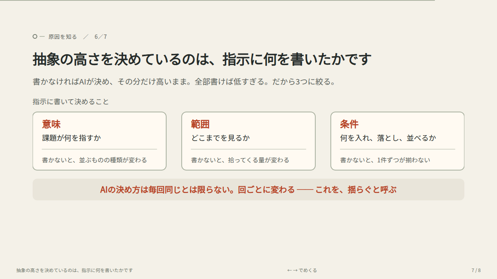
では、その抽象の高さは、何で決まるのでしょうか。
指示に何を書いたかで決まります。
指示に書かなかったことは、AIが決めます。
AIが決めるところが多いほど、何を返しても指示どおりになるので、抽象の高さは上がったままです。
かといって、全部を書けばいいわけではありません。
すべて書き込むと、さきほどの、その1回にしか使えない指示になります。
そこで、書くことを3つに絞ります。
返ってくるものの変わり方が、大きく3通りに分けられるからです。
並んでいるものの種類が変わる。
拾ってくる量が変わる。
1件ずつの書き方が揃わない。
この3通りに、書くことを1つずつ対応させます。
1つめは、意味です。
課題という言葉が何を指すのかを書きます。
書いていなければ、どの意味で拾うかをAIが決めるので、並ぶものの種類が変わります。
2つめは、範囲です。
渡したもののどこまでを見るのかを書きます。
書いていなければ、どこまで読むかをAIが決めるので、拾ってくる量が変わります。
3つめは、条件です。
1件ずつに何を入れ、何を落とし、どの順に並べるかを書きます。
書いていなければ、入っている回と入っていない回に分かれます。
3つとも、書かなければAIが決める、という点は同じです。
そしてAIの決め方は、毎回同じとは限りません。
だから、返ってくるものが回ごとに変わります。
この、回ごとに変わることを、この教材では、揺らぐ、と呼びます。
ちょうどいい抽象の高さは、この順で探します
変更なし ── 開いて見る
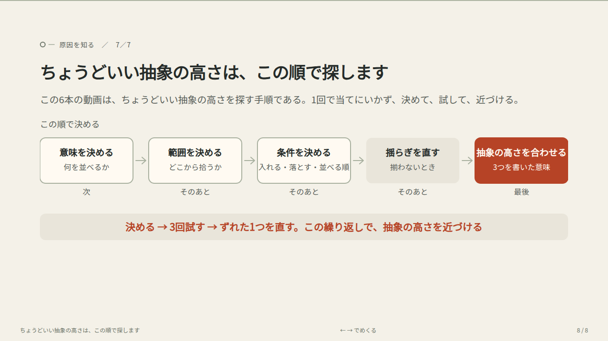
最後に、これから進める順番を確認しておきます。
ちょうどいい抽象の高さは、一度で決め切れるものではありません。
3つのうち1つを書き足し、返ってきたものを見て、まだずれていれば次の1つを書き足す。
この繰り返しで近づけていきます。
書き足す順番は、意味、範囲、条件です。
この順番には理由があります。
何を拾うのかが決まっていなければ、どこから拾うかだけを決めても役に立ちません。
だから、意味を決めてから範囲を決めます。
また、別の案件の話まで入っていると、誰が決めるのかを、指示を書く側で決めることができません。
だから、範囲を決めてから条件を書きます。
この教材では、課題を整理して、という1つの指示に、動画ごとに1つずつ書き足していきます。
1つ書き足すたびに、同じ議事録を渡して3回頼み、返ってきたものを見比べます。
1回返ってきたものだけでは、揺らいでいるかどうかを見分けられないからです。
それでは、次の動画に進みます。
扱うのは、1つめの意味です。
2本目 意味を決める
意味を決める
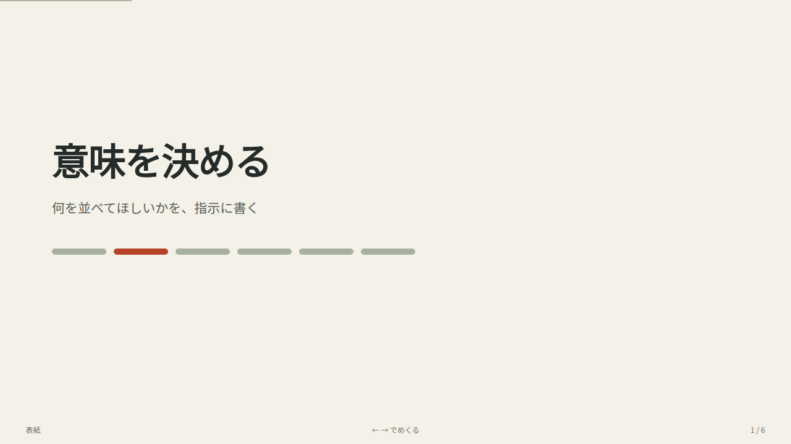
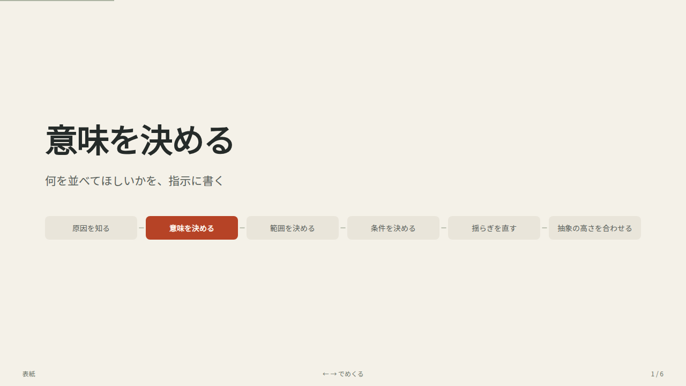
| 観点の群 | 結果 | 見つけたこと | 直したこと |
|---|---|---|---|
| 図の表現 | 修正 | 6本の棒のうち1本が赤いだけで、ラベルが無く、何を示すか読み取れなかった | 6本の動画の名前の札を順に並べ、いまの1本だけを塗った。はじめにの「6本の動画で、この順に進みます」と同じ名前と順にした |
同じものを渡して、同じことを3回頼みます
変更なし ── 開いて見る
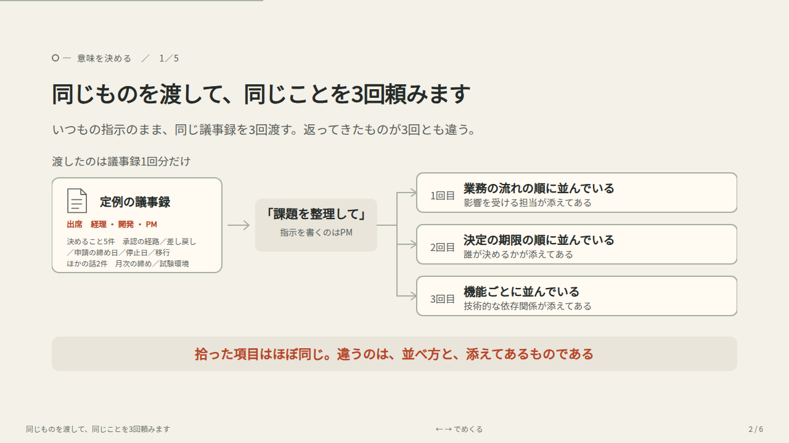
前の動画で、返ってくるものが揃わない原因は、指示をどこまで決めずに書いているか、つまり抽象の高さにある、と分かりました。
指示に書かなかったことは、AIが決めます。
この動画では、書き足す3つのうちの1つめ、意味を扱います。
まずは、いつもの指示のままで何が起きるかを見ます。
渡すのは、今週の定例の議事録1回分です。
定例には、経理と開発とPMが出席しています。
議事録には、決めることが5件出ています。
承認の経路と、その差し戻しの扱い。
申請の締め日と、旧システムの停止日。
そして、既存データの移行です。
それ以外の話も2件あります。
月次の締めについての話と、試験環境についての話です。
どちらも、精算業務か開発の中で片づけられる話です。
この2件は、あとで使います。
指示は、課題を整理して、だけです。
同じ議事録を渡して、3回頼みます。
1回目は、業務の流れの順に並んでいて、各項目に、影響を受ける担当が添えてありました。
2回目は、決定の期限の順に並んでいて、誰が決めるかが添えてありました。
3回目は、機能ごとに並んでいて、技術的な依存関係が添えてありました。
ここで注目していただきたいのは、AIが拾ってきた項目そのものは、3回ともそれほど変わらないことです。
違うのは、並べ方と、各項目に何を添えているかです。
つまり、整理の仕方が3通りあったのです。
整理の目的が、業務ごとに違います
変更なし ── 開いて見る
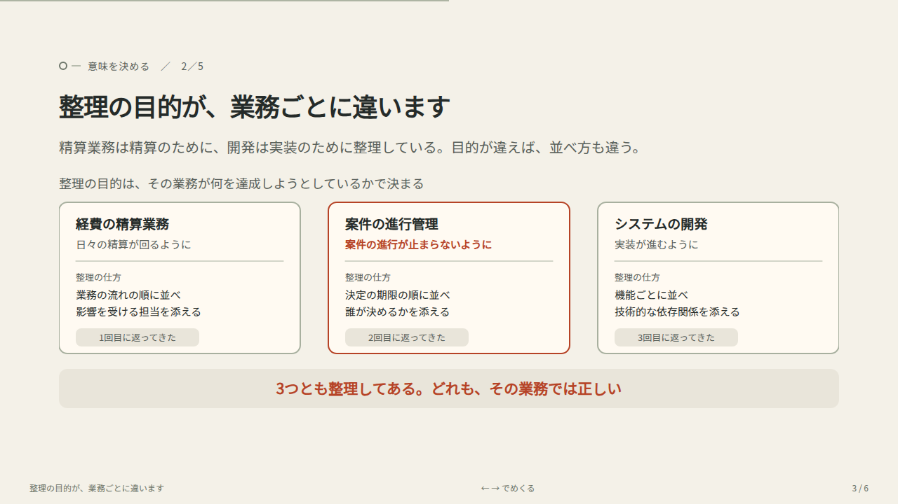
なぜ3通りになったのでしょうか。
整理には、必ず目的があります。
何のために並べ替えるのか、ということです。
そして、その目的は業務ごとに違います。
精算業務の側は、日々の精算が回るように整理します。
だから、業務の流れの順に並べます。
開発の側は、実装が進むように整理します。
だから、機能ごとに並べます。
進行管理の側は、案件の進行が止まらないように整理します。
何がいつまでに決まらないと、どの作業が止まるのか。
それはスケジュールを見れば分かります。
だから、その期限の順に並べ、先に決めないと作業が止まるものを上に置きます。
各項目には、誰が決めるかを添えます。
誰に確認すれば決まるのかが分からないと、スケジュールに入れられないからです。
3回返ってきたものは、どれも整理としては間違っていません。
目的が違えば、整理の仕方も違う。
起きていたのは、それだけのことです。
そして、いまPMが欲しいのは、このうちの進行管理の整理です。
指示には、何のために整理するかが書いてありません
変更なし ── 開いて見る
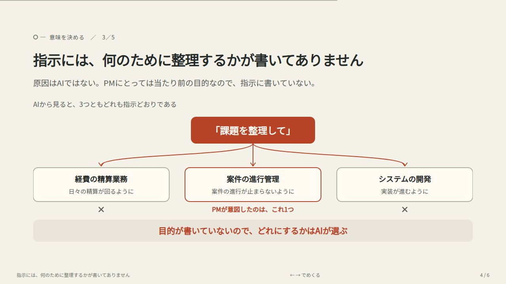
では、指示のほうを見直してみます。
課題を整理して。
この指示に書いてあるのは、整理してほしい、ということだけです。
何のために整理するのかは、どこにも書いてありません。
PMの頭の中には、目的がありました。
どの課題から決めるか、優先順位を付けたい。
そのために整理してほしい、という目的です。
ただ、PMにとっては自分の業務の中で当たり前のことなので、わざわざ書こうとは思いません。
PMにとっては、整理するといえば、その整理しかないからです。
ところがAIから見ると、目的が書いていない以上、精算業務の側の整理も、開発の側の整理も、どれも指示どおりです。
書いていないので、どれにするかはAIが選びます。
その選び方は、毎回同じとは限りません。
だから、1回目は業務の流れの順、2回目は決定の期限の順、3回目は機能ごと、となったのです。
AIの調子が悪かったわけではありません。
原因は、何のために整理するのかを書かないまま渡していた、こちらの側にあります。
オリエンテーションでお話しした、PMの頭の中にある基準の1つめが、この目的です。
何を並べるかを、1つ書き足します
変更なし ── 開いて見る
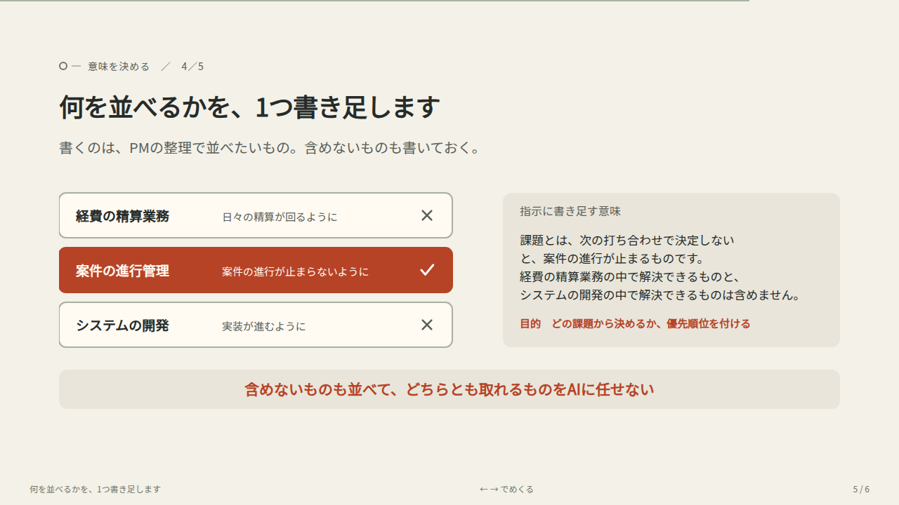
では、どう書けばいいのでしょうか。
意味を1つ、書き足します。
課題とは、次の打ち合わせで決定しないと、案件の進行が止まるものです。
経費の精算業務の中で解決できるものと、システムの開発の中で解決できるものは含めません。
この書き足しで、2つのことをしています。
1つは、何を並べるのかを書いたことです。
決定しないと、案件の進行が止まるもの。
これが、PMの整理で並べたいものです。
優先順位を付けるには、まずこれが分かればいいからです。
もう1つは、含めないものも書いたことです。
含めるものだけを書くと、どちらとも取れるものが残ります。
今回でいえば、月次の締めの話です。
進行が止まる話にも、精算業務の中の話にも読めます。
含めないものを書いておけば、この1件を入れるのか外すのかを、AIに判断させずに済みます。
並べる順番と、各項目に何を添えるかは、まだ書いていません。
そこは、条件を決める動画で扱います。
意味を足すと、並ぶものの種類が揃います
変更なし ── 開いて見る
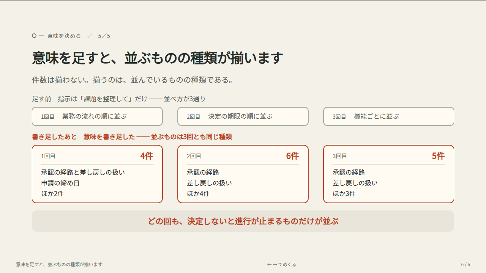
意味を書き足した指示で、同じ議事録を渡して、もう一度3回頼みます。
返ってきたのは、4件、6件、5件でした。
件数は揃っていません。
中身を見てみます。
5件の回に並んでいたのは、承認の経路と、差し戻しの扱い。
申請の締め日と、旧システムの停止日。
そして、既存データの移行です。
6件の回は、既存データの移行を、移行の対象と移行の日付の2行に分けていました。
4件の回は、承認の経路と差し戻しの扱いを、1行にまとめていました。
どれも、決定しないと案件の進行が止まるものです。
月次の締めの話は、どの回にも入っていません。
試験環境の話も同じです。
並ぶ順番は、まだ回ごとに違います。
揃ったのは、並んでいる項目の種類のほうです。
書き足したのは、意味の1つだけです。
もとの、課題を整理して、はそのまま残っています。
ここで、件数まで揃えようとする必要はありません。
議事録に出ている項目は5件で、1つを2行に分けた回や、2つを1行にまとめた回があるだけです。
では、うまくいったかどうかは、何で判断すればいいのでしょうか。
返ってきた一覧を上から見て、決めなくても進行が止まらない項目が1つでも混じっていれば、外れです。
件数の多い少ないではなく、要らない項目が混じっているかどうかで判断します。
意味を書き足したことで、AIに任せていたことが1つ減りました。
抽象の高さが、少し下がったということです。
ただ、まだ揃っていないものがあります。
1件ずつの書き方です。
誰が決めるのかが書いてある回と、書いていない回があります。
そこは、条件を決める動画で扱います。
その前に、次の動画では、渡すものを増やしたときに何が起きるかを見ます。
3本目 範囲を決める
範囲を決める
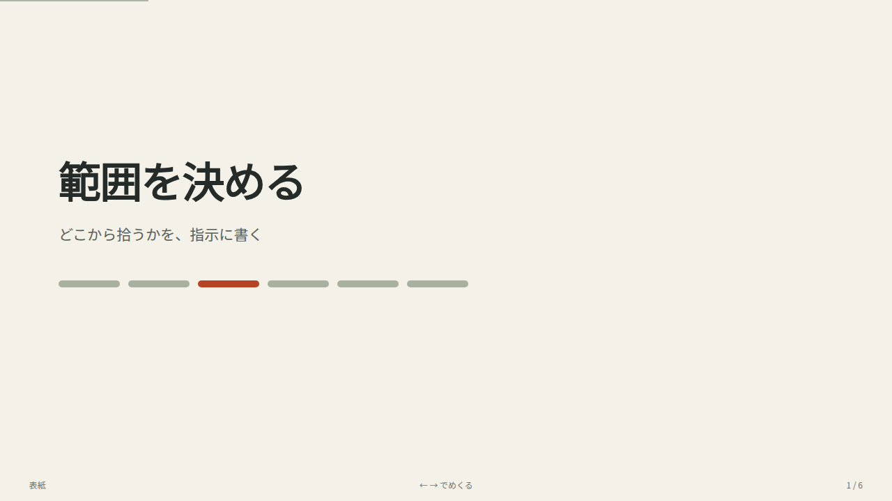
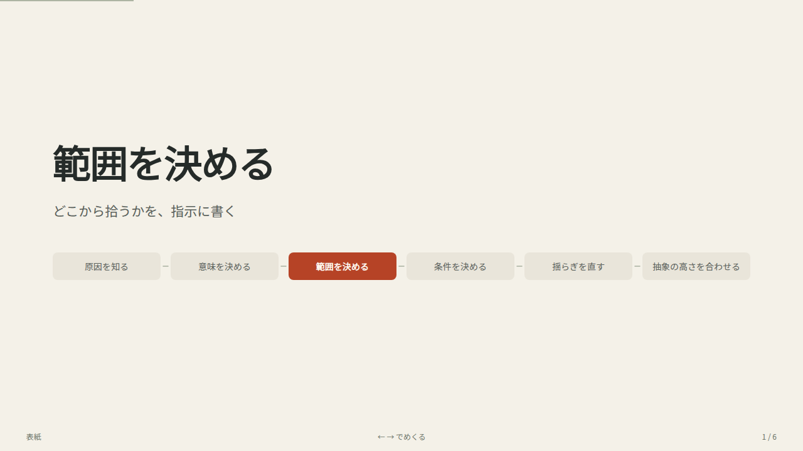
| 観点の群 | 結果 | 見つけたこと | 直したこと |
|---|---|---|---|
| 図の表現 | 修正 | 6本の棒のうち1本が赤いだけで、ラベルが無く、何を示すか読み取れなかった | 6本の動画の名前の札を順に並べ、いまの1本だけを塗った。はじめにの「6本の動画で、この順に進みます」と同じ名前と順にした |
同じ議事録に、4種類の話が混ざっています
変更なし ── 開いて見る

前の動画で、意味を書き足しました。
課題とは、決定しないと案件の進行が止まるもの、という指定です。
次は、渡すものを増やしてみます。
定例の議事録を、5週分まとめて渡します。
実際の仕事でも、1週分だけでなく、何週分かをまとめて渡すことはよくあるからです。
まず、議事録の中身を見ておきます。
精算業務や開発の中で片づけられる話は、意味を書き足した時点で、もう落ちるようになっています。
それでも、議事録には4種類の話が残っています。
1つめは、今回の案件で、本番の切り替えまでに決めることです。
これが、PMの欲しいものです。
2つめは、次のフェーズで決めることです。
交通費の自動取得や、海外出張の通貨の換算などです。
切り替えの後の話なので、いま決める必要はありません。
3つめは、定例で出た別案件の相談です。
要員の手配をどうするか、といった話が、ついでに出ます。
4つめは、全社の連絡事項です。
研修の案内や、勤怠の締めです。
また、議事録には、すでに決まったことの記録も残っています。
5週分を渡しても、欲しいものはあまり増えません。
定例では、決まるまで同じ議題が繰り返し出るからです。
増えるのは、案件以外の話のほうです。
この5週分を渡して、同じ指示で3回頼みます。
返ってきたのは、5件、9件、14件でした。
いちばん少ない回といちばん多い回で、3倍近く違います。
違うのは、どこまでを対象にしたかです
変更なし ── 開いて見る
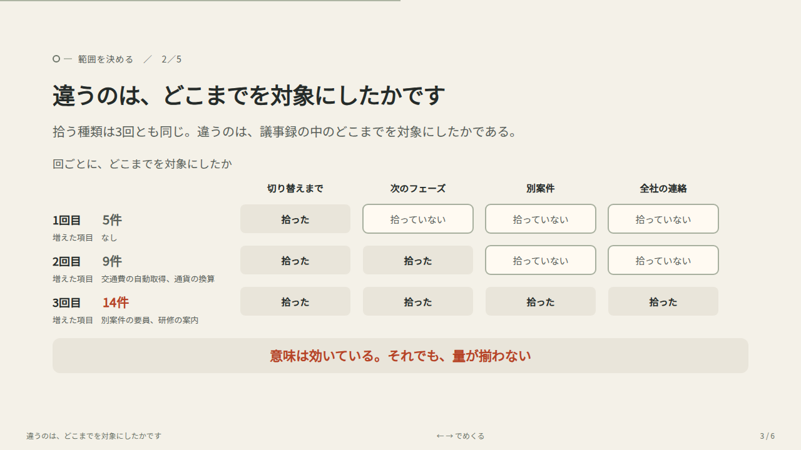
中身を見ると、月次の締めの話と試験環境の話は、どの回にも入っていませんでした。
意味で含めないと書いた2件です。
意味は、きちんと効いています。
違うのは、議事録の中のどこまでを対象にしたか、です。
1回目は、今回の案件で、切り替えまでに決めることだけを拾っていました。
2回目は、それに加えて、次のフェーズの話も拾っていました。
交通費の自動取得や、海外出張の通貨の換算です。
どれも、いつかは決めなければならないことなので、AIが拾ったこと自体は間違いではありません。
3回目は、さらに別案件の相談と、全社の連絡事項まで拾っていました。
別案件の要員の手配や、研修の案内です。
議事録に書いてある以上、拾うこともできてしまいます。
つまり、意味は効いているのに、件数が揃わない。
意味を書き足すだけでは足りない、ということです。
意味は「何を並べるか」、範囲は「どこから拾うか」を決めます
変更なし ── 開いて見る
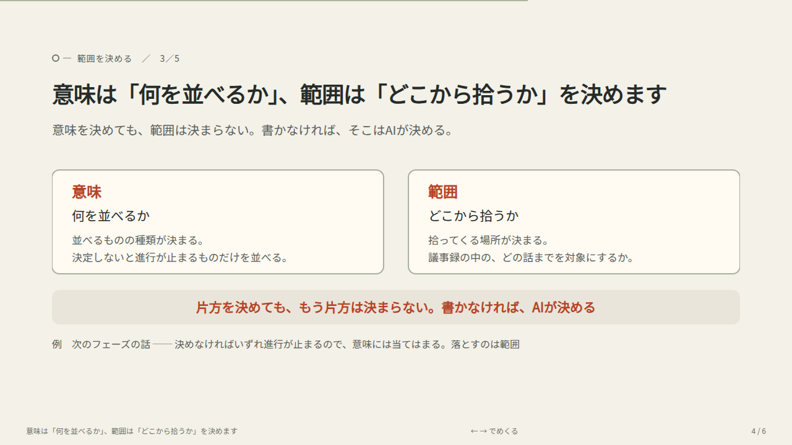
意味と範囲を並べると、役割の違いがはっきりします。
意味が決めるのは、何を並べるかです。
決定しないと進行が止まるものを並べる、という部分でした。
範囲が決めるのは、どこから拾うかです。
議事録の中の、どの話までを対象にするかです。
この2つは別のものなので、片方を決めても、もう片方は決まりません。
違いがよく分かる例を1つ挙げます。
さきほどの、次のフェーズの話です。
次のフェーズの話も、決めなければ、いずれは進行が止まります。
ですから、意味には当てはまってしまい、意味では落とせません。
落とすのは、範囲です。
一方、意味で落ちるのは、精算業務の中だけで片づく話のほうです。
決める必要はあっても、PMが並べるものではないからです。
こちらは、どこに書いてあるかではなく、話の中身で落ちます。
そして、範囲を書いていなければ、どこまで見るかはAIが決めます。
AIは、議事録に書いてあることを全部対象にすることもあれば、いま進めている話だけにすることもあります。
どちらも、間違いとは言えません。
間違いとは言えない選び方がいくつもあると、回ごとに選び方が変わります。
揃えたいなら、こちらで決めて書くしかありません。
指示を見直すときは、どこまでを見るか、が書いてあるかを確かめます。
範囲を1つだけ書き足します
変更なし ── 開いて見る
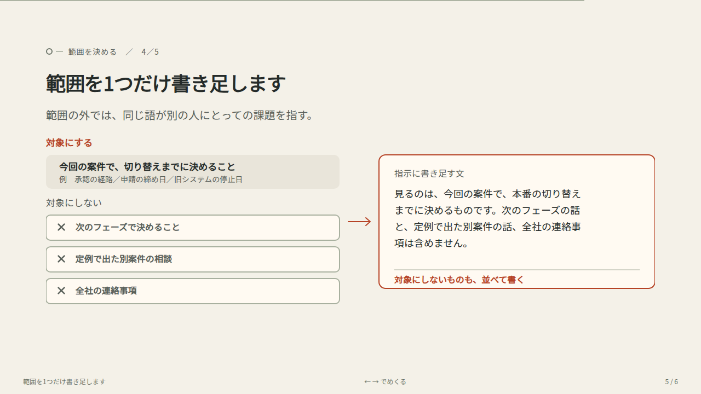
では、範囲を書き足します。
書き足すのは1つです。
見るのは、今回の案件で、本番の切り替えまでに決めるものです。
次のフェーズの話と、定例で出た別案件の話、全社の連絡事項は含めません。
ここでも、含めないものを書いておきます。
そして、ここでもう1つ気づいていただきたいことがあります。
別案件の相談の中にも、課題という言葉が出てきます。
ただ、そこでの課題は、別の案件を進めている担当者にとっての課題です。
こちらが意味で決めた、この案件の進行が止まるもの、とは別のものです。
同じ言葉でも、範囲の外では別のものを指しているのです。
ですから、意味を決めただけでは足りません。
その意味が通じる範囲まで決めて、はじめて1つに定まります。
1つ補足しておきます。
範囲は、渡すものが何週分かとは関係ありません。
1週分だけ渡すときでも、議事録の全体を見るのか、特定の議題だけを見るのか、直近の期間だけを見るのか、を決めることができます。
範囲とは、そうした、どこを見るかの決め方のことです。
範囲を足すと、拾ってくる場所が揃います
変更なし ── 開いて見る
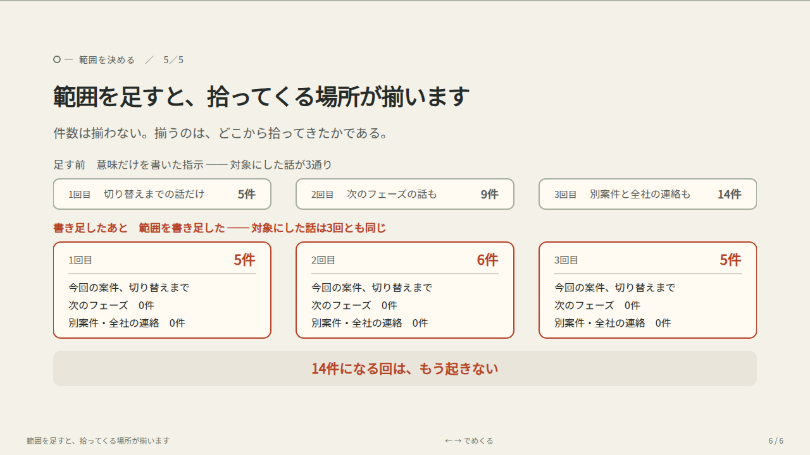
同じ5週分を渡したまま、範囲を書き足した指示で、もう一度3回頼みます。
返ってきたのは、5件、6件、5件でした。
中身を見ると、どの回も、今回の案件で本番の切り替えまでに決めることだけを拾っています。
次のフェーズの話も、別案件の相談も、全社の連絡事項も、どの回にも出てきません。
14件に膨らむようなことは、もう起きません。
件数がまだ少し動くのは、1件を2行に分けた回と、すでに決まったものが混じった回があるためです。
ここまでで、何を並べるかと、どこから拾うかが決まりました。
範囲を書き足したことで、AIに任せていたことがまた1つ減り、抽象の高さがもう少し下がりました。
それでも、まだ揃っていないものがあります。
1件ずつの書き方です。
次の動画では、そこを扱います。
4本目 条件を決める
条件を決める
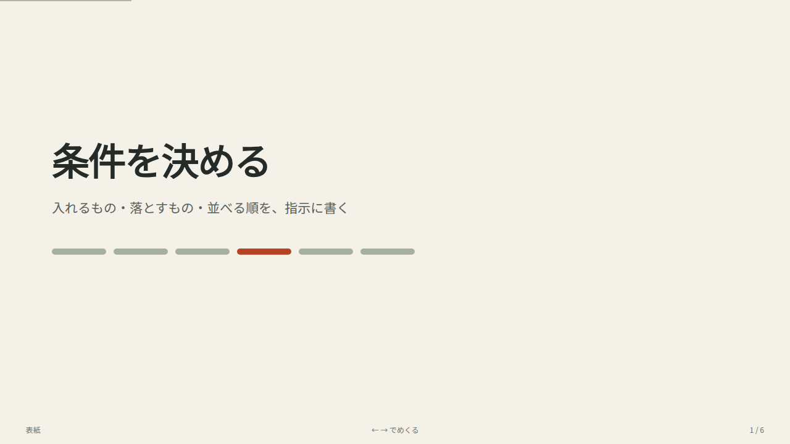
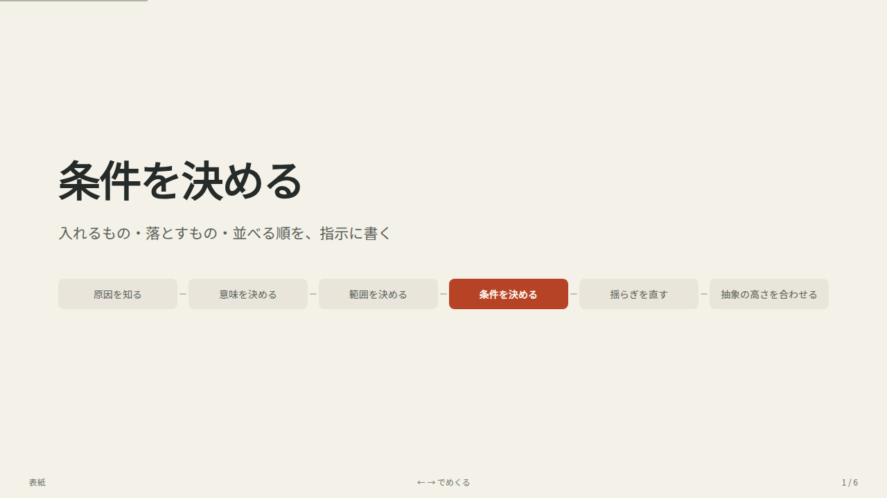
| 観点の群 | 結果 | 見つけたこと | 直したこと |
|---|---|---|---|
| 図の表現 | 修正 | 6本の棒のうち1本が赤いだけで、ラベルが無く、何を示すか読み取れなかった | 6本の動画の名前の札を順に並べ、いまの1本だけを塗った。はじめにの「6本の動画で、この順に進みます」と同じ名前と順にした |
意味と範囲を決めても、1件ずつの中身は揃いません
変更なし ── 開いて見る
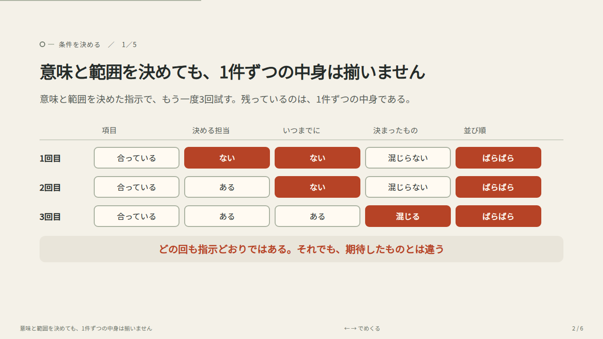
ここまでで、意味と範囲を書き足しました。
並ぶものの種類も、拾ってくる場所も、揃うようになっています。
それでも、3回頼むと、まだ揃わないところがあります。
1回目は、項目そのものは合っていますが、誰が決めるのかが書かれていません。
項目名だけが並んでいます。
2回目は、経理、開発、PMというように、決める担当が書いてあります。
ところが、いつまでに決めるのかが書いてありません。
3回目は、担当も期限も書いてあります。
ただ、もう決まったことが混じっていました。
申請の画面の試作を次の工程へ進める、という項目です。
そして3回とも、並んでいる順は期限とは関係のない順でした。
3回とも、決定しないと進行が止まるものを、定例5週分の中から拾ってきています。
指示どおりではあるのに、PMが期待していたものとは違います。
必ず入れてほしい4つを、指示に書いていませんでした
変更なし ── 開いて見る
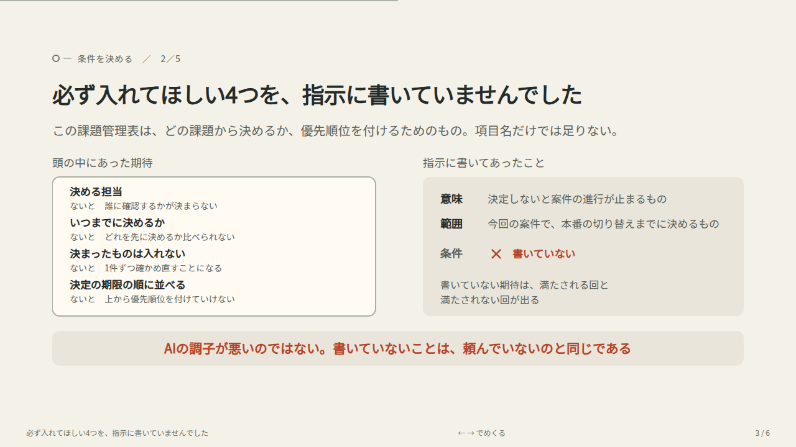
では、PMは何を期待していたのでしょうか。
書き出してみます。
この課題管理表は、どの課題から決めるか、優先順位を付けるために作るものでした。
そうであれば、項目名だけでは足りません。
誰が決めるのかが分からないと、誰に確認して進めればいいかが決まりません。
いつまでに決めるのかが分からないと、どれを先に決めるべきかを比べられません。
もう決まったものが混ざっていると、1件ずつ確かめ直すことになります。
期限と関係のない順に並んでいると、上から順に優先順位を付けていけません。
この4つは、PMの頭の中にはありました。
ただ、指示には書いていません。
書いていない期待は、満たされる回と満たされない回が出ます。
書いていないことは、頼んでいないのと同じだからです。
オリエンテーションでお話しした、PMの頭の中にある基準の2つめが、これです。
何を添えて、何を落とし、どの順に並べるか。
こうした期待は、返ってきたものを手で直している箇所から見つけられます。
毎回同じところを直しているなら、それが指示に書くべきことです。
条件は、一覧の中身を決めます
変更なし ── 開いて見る
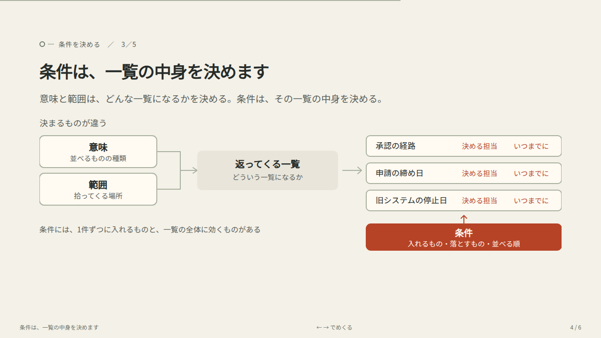
ここで、意味、範囲、条件の3つを並べてみます。
意味で決めたのは、並べるものの種類でした。
範囲で決めたのは、拾ってくる場所でした。
この2つは、どんな一覧になるかを決めています。
これに対して条件は、その一覧の中身を決めます。
条件には2種類あります。
1つは、1件ずつに必ず入れるものです。
どの項目にも、誰が決めるかを入れる。
どの項目にも、いつまでかを入れる。
ここで大事なのは、どれか1件に、ではなく、どの項目にも、と書くことです。
そう書いておけば、1件でも欠けていれば条件を満たしていない、とはっきり判断できます。
もう1つは、一覧の全体に効くものです。
一覧から何を落とすかと、どの順に並べるかです。
条件を書き足すと、1件ずつがこうなります
変更なし ── 開いて見る

では、条件を書き足します。
どの項目にも、誰が決めるかと、いつまでかを必ず入れてください。
すでに決まったものは含めないでください。
決定の期限の早い順に並べてください。
条件は4つです。
1つめは、誰が決めるかを入れること。
2つめは、いつまでかを入れること。
この2つは、1件ずつの中身を作ります。
1件は、項目と、誰が決めるかと、いつまでに決めるかの3つでできています。
項目のところは、意味と範囲がすでに決めています。
残りの2つを、この条件が作ります。
3つめは、すでに決まったものを落とすこと。
4つめは、期限の早い順に並べること。
この2つは、一覧の全体に効きます。
こう書いておくと、返ってきた一覧の上から順に、優先順位を付けていけます。
ここで1つ、範囲とのつながりを確認しておきます。
この条件は、さきほど決めた範囲の中でしか成り立ちません。
1本目でお話ししたとおり、別案件の相談まで範囲を広げると、誰が決めるかを書けなくなるからです。
範囲を変えれば、条件も変わります。
だから、範囲を決めてから条件を決めるのです。
条件を足すと、1件ずつの中身が揃います
変更なし ── 開いて見る
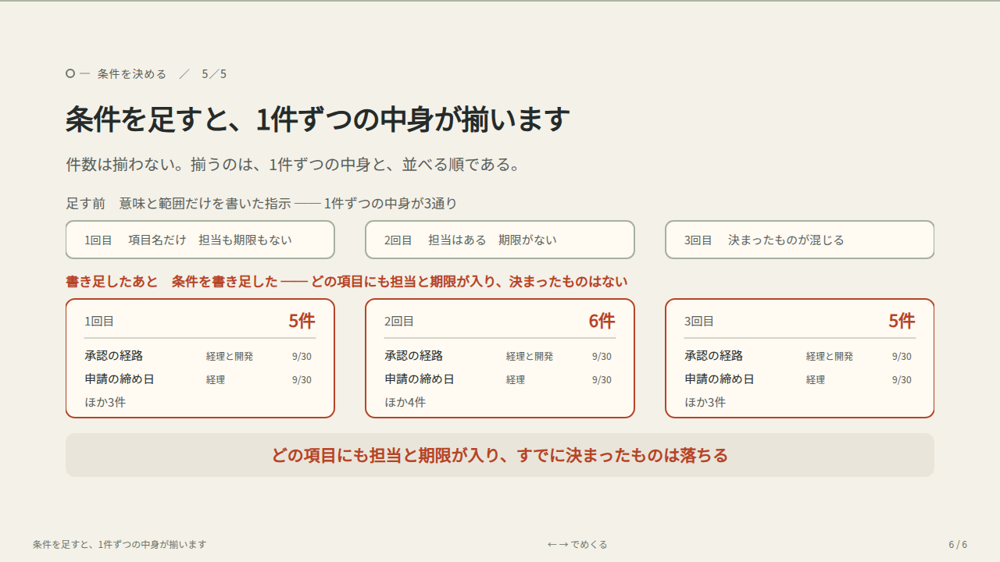
条件を書き足した指示で、もう一度3回頼みます。
返ってきたのは、5件、6件、5件でした。
条件を書き足す前は、3回目が6件でした。
もう決まったものが1件混じっていたからです。
それが落ちて、5件になりました。
2回目が6件なのは、これまでと同じで、1件を2行に分けているからです。
そして、1件ずつの中身は、3回とも同じ形になっています。
承認の経路は、経理と開発が、9月30日までに決める。
申請の締め日は、経理が、9月30日までに決める。
どの項目にも、誰が決めるかと、いつまでかが入っています。
申請の画面の試作を次の工程へ進める、という項目は、どの回にも入っていません。
すでに決まったものだからです。
並び順も、期限の早い順で揃っています。
9月30日のものが先に、10月7日のものが後に並びます。
書き足す前は、項目名だけが並んだ回、担当はあっても期限が抜けている回、すでに決まったものが混じって並び順もばらばらな回、の3通りでした。
ここまでで、意味、範囲、条件の3つを書き足しました。
もとの指示は、課題を整理して、これだけでした。
それが、優先順位を付けるのにそのまま使える課題管理表を返すようになりました。
これで、書くべき3つは書き終えました。
それでも、揃わないことがあります。
次の動画では、そのときにどこを見ればいいかを扱います。
5本目 揺らぎを直す
揺らぎを直す
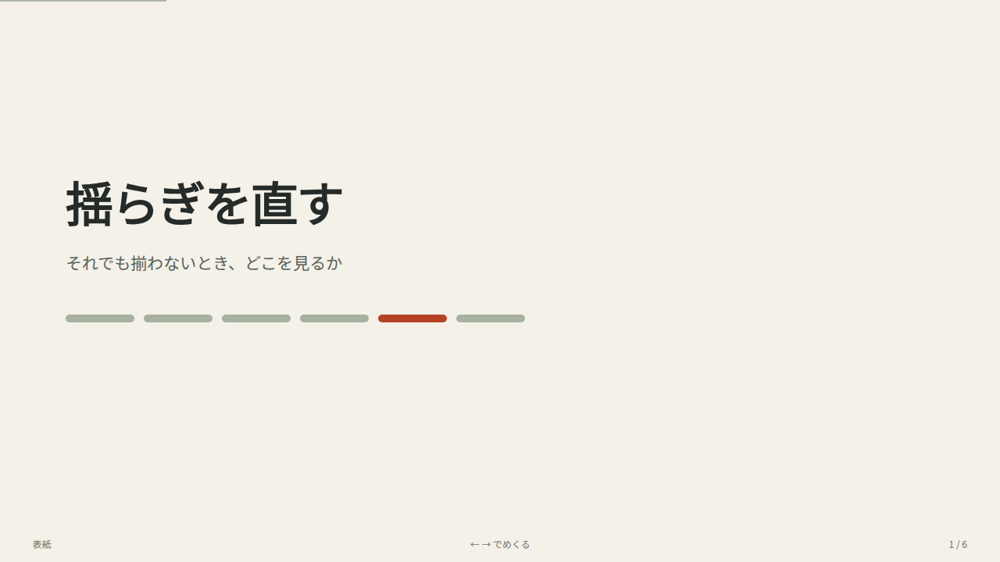
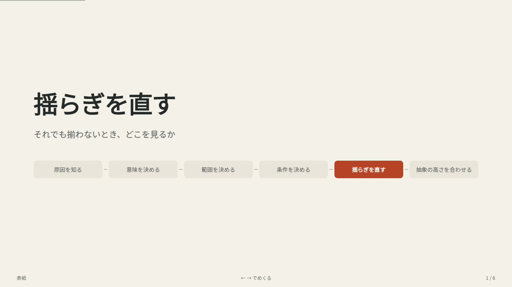
| 観点の群 | 結果 | 見つけたこと | 直したこと |
|---|---|---|---|
| 図の表現 | 修正 | 6本の棒のうち1本が赤いだけで、ラベルが無く、何を示すか読み取れなかった | 6本の動画の名前の札を順に並べ、いまの1本だけを塗った。はじめにの「6本の動画で、この順に進みます」と同じ名前と順にした |
3つを書き足しても、返ってくるものが揃わないことがあります
変更なし ── 開いて見る
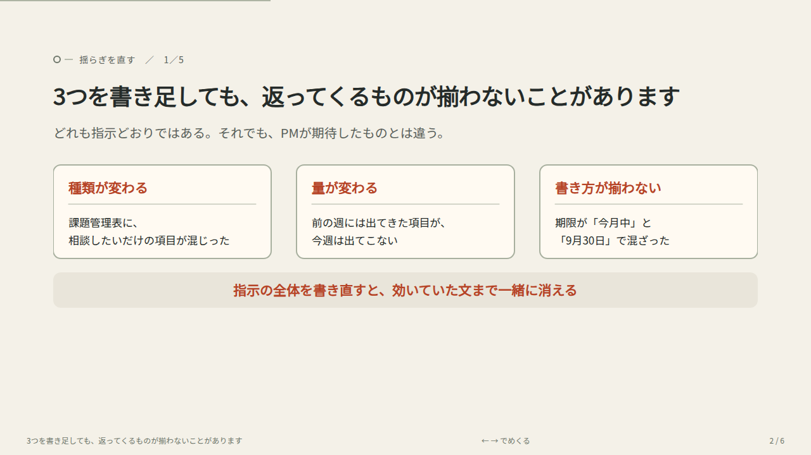
意味、範囲、条件の3つを書き足しても、返ってくるものが揃わないことがあります。
よく起きるのは、次の3つです。
1つめは、決定しないと進行が止まるものの一覧に、相談したいだけの項目が混じってくることです。
決めるのはPMではないけれど、相談はしておきたい、という項目です。
2つめは、前の週には出てきた項目が、今週は出てこないことです。
渡すものには同じように書いてあるのに、拾われる回と拾われない回があります。
3つめは、期限の書き方が、今月中、と、9月30日、で混ざることです。
条件には、いつまでかを入れる、と書いてあるので、指示どおりではあります。
こういうとき、どこから見ればいいのかを決めておかないと、指示の全体を書き直すことになります。
全体を書き直すと、効いていた文まで一緒に消えてしまいます。
揃っていたところまで崩れるので、かえって手間が増えます。
直すときも、意味・範囲・条件の順に見ます
変更なし ── 開いて見る
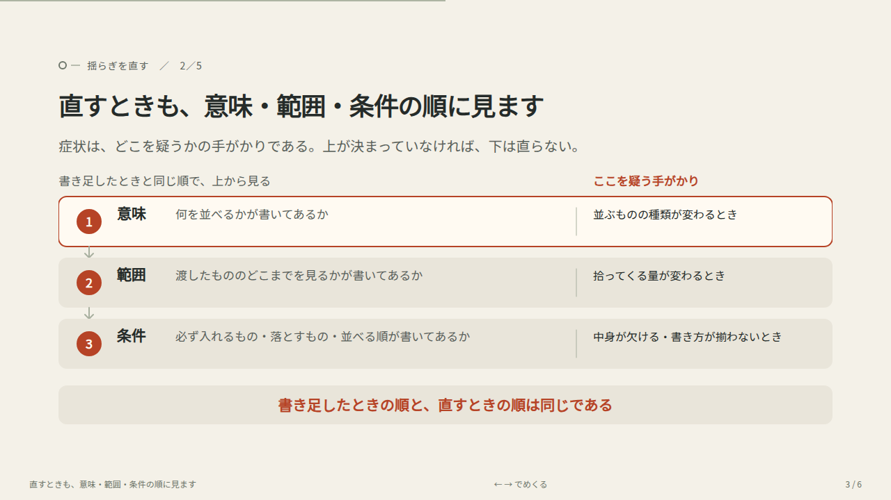
どこから見るかは、書き足したときと同じ順番です。
意味、範囲、条件の順に見ます。
まず、意味です。
何を並べるかが書いてあるかを見ます。
並ぶものの種類が回ごとに変わるときは、ここを疑います。
さきほどの、相談したいだけの項目が混じる例がこれにあたります。
課題という言葉に、まだ2つ以上の意味が残っているのです。
次に、範囲です。
渡したもののどこまでを見るかが書いてあるかを見ます。
拾ってくる量が変わるときは、ここを見直します。
前の週には出てきたのに今週は出てこない、という例がこれにあたります。
最後に、条件です。
必ず入れるもの、落とすもの、並べる順が書いてあるかを見ます。
1件ずつの中身が欠けたり、書き方が揃わなかったりするときは、ここを確かめます。
期限が、今月中、と、9月30日、で混ざったのは、日付で書く、と書いていなかったからです。
ここで大事なのは、見る順番です。
症状は、どこを疑うかの手がかりにすぎません。
中身が欠けているからといって、いきなり条件から直しても、直らないことがあります。
意味が決まっていなければ範囲は決められず、範囲が決まっていなければ条件は書けないからです。
書き足したときにこの順番だったのと同じ理由で、直すときもこの順番で見ます。
直すのは、1か所ずつです
変更なし ── 開いて見る
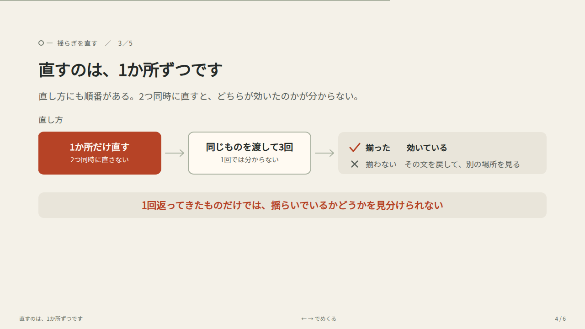
直すときは、1か所ずつ直します。
返ってくるものが揃わないと、つい全部を書き直したくなりますが、それはしません。
2か所を同時に直すと、どちらが効いたのかが分からなくなるからです。
効かなかったほうの文も残ったまま、指示だけが長くなっていきます。
手順は、直すのは1か所、確かめるのは3回です。
1か所だけ直したら、同じものを渡して、もう一度3回頼みます。
なぜ3回なのか。
2回だけでは、揃ったのが偶然なのか、直した文が効いたのかを見分けられません。
3回頼めば、揺らいでいる指示なら、違う形の回が出てくることが多くなります。
3回とも揃っていれば、直した文は効いています。
揃っていなければ、その文を元に戻して、別の場所を見ます。
1回返ってきたものではなく、3回の揃い方で判断します。
それでも揃わないときは、目的を見ます
変更なし ── 開いて見る
意味、範囲、条件を順に見ても揃わないときは、指示の目的を見ます。
このとき多いのは、1つの指示に、目的が2つ入っている場合です。
たとえば、課題を整理して、打ち手も考えて、という指示です。
これは、課題を整理することと、打ち手を考えることの、2つを頼んでいます。
漏れなく並べることと、絞り込んで深く考えることは、逆向きの作業です。
並べる指示では、AIは件数を増やす方向に動きます。
深く考える指示では、件数を減らして、1件ずつを詳しく書こうとします。
1回の指示で、両方を同時にはできません。
ですから、どちらかに寄ったものが返ってくるか、両方が中途半端になります。
目的が2つ入っているかどうかは、何のためにするのかを1文で書いてみると分かります。
その1文が、と、や、そして、でつながっているなら、目的は2つです。
そのときは、つなぎ目のところで、指示を2つに分けます。
直し方を、1枚にまとめます
変更なし ── 開いて見る
ここで、直し方を1枚にまとめておきます。
返ってくるものが揺らいだら、意味、範囲、条件の順に見ます。
症状は、どこを疑うかの手がかりです。
並ぶものの種類が変わるなら意味、拾ってくる量が変わるなら範囲、1件ずつの中身が揃わないなら条件を疑います。
ただし、前の1つが決まっていなければ、次の1つを直しても揃いません。
3つを見ても揃わなければ、指示に目的が2つ入っていないかを見ます。
そして、直すのは1か所ずつ、確かめるのは3回です。
これで、書き足すことが3つと、直し方がそろいました。
ただ、まだお話ししていないことがあります。
この3つを書き足すことは、そもそも何をしていたのか、という点です。
次の動画で、そこを振り返ります。
6本目 抽象の高さを合わせる
抽象の高さを合わせる
| 観点の群 | 結果 | 見つけたこと | 直したこと |
|---|---|---|---|
| 図の表現 | 修正 | 6本の棒のうち1本が赤いだけで、ラベルが無く、何を示すか読み取れなかった | 6本の動画の名前の札を順に並べ、いまの1本だけを塗った。はじめにの「6本の動画で、この順に進みます」と同じ名前と順にした |
もとの指示に、3つを書き足しました
変更なし ── 開いて見る
ここまでで、指示はこうなりました。
もとの指示は、課題を整理して、だけでした。
そこに、意味と範囲と条件の3つを書き足しています。
1つめの意味には、何を並べてほしいかを書きました。
決定しないと案件の進行が止まるもの、です。
2つめの範囲には、どこから拾ってほしいかを書きました。
今回の案件で、本番の切り替えまでに決めるもの、です。
3つめの条件には、1件ずつに何を入れるか、何を落とすか、どの順に並べるかを書きました。
渡すのは、この案件の定例の議事録5週分です。
書き足したのは、この3つだけです。
全文は、最後の動画で読み上げます。
指示はそのままで、渡すもののほうを替えてみます
変更なし ── 開いて見る
では、指示はそのままにして、渡すもののほうを替えてみます。
今週までの定例5週分を渡すと、5件返ってきます。
来週までの5週分を渡すと、6件です。
1週分新しくなって、決めることが1件増えたからです。
別の案件でも試してみます。
範囲の文の中の、今回の案件、というところだけを、別の案件の名前に置き換えます。
その案件の定例5週分を渡すと、返ってきたのは9件でした。
中身はまったく違います。
承認の経路の話も、締め日の話も出てきません。
たとえば1件目は、受注データの連携方式を、開発と営業が、10月14日までに決める、というものです。
それでも、返ってきた一覧は、どれも同じ形をしています。
決定の期限の順に並び、誰が決めるかと、いつまでかが付いています。
案件を指すところを替えるだけで、ほかの案件にも同じ指示が使えるのです。
中身は変わっても、形は変わりません。
いまの指示は、高すぎる側と低すぎる側の間にあります
変更なし ── 開いて見る
1本目で、2つの指示を並べました。
課題を整理して、という抽象の高い指示と、1行目に承認の経路、2行目に申請の締め日、という具体的な指示です。
前者は、どの議事録にも使えますが、何が返ってくるかは決まりません。
後者は、返ってくるものは決まりますが、その1回にしか使えません。
そして、その間に、目的に合ったちょうどいい高さがある、とお話ししました。
いまの指示が、その間にあります。
この指示で決めているのは、何を並べるか、どこから拾うか、1件ずつに何を入れてどう並べるか、という決まりごとだけです。
承認の経路、といった個別の項目は、1つも書いていません。
だから、どの週の議事録にも、別の案件の議事録にも使えます。
それでいて、返ってくるものは目的から外れません。
高すぎる側にも、低すぎる側にも寄っていない。
これが、ちょうどいい抽象の高さです。
意味・範囲・条件を決めることが、抽象の高さを合わせることでした
変更なし ── 開いて見る
意味、範囲、条件を書き足してきた3本の動画を振り返ります。
やったことは、意味を決め、範囲を決め、条件を決める、という3つだけでした。
この3つが、そのまま抽象の高さを合わせる作業だったのです。
3つとも、書かなければAIが決めるところです。
AIの決め方は毎回同じとは限らないので、書かなければ、返ってくるものが揺らぎます。
書けば、そこはAIが決めなくなり、そのぶん抽象の高さが下がります。
抽象の高さを上げる、下げる、と言われても、何をすればいいのかは分かりません。
でも、意味と範囲と条件なら、何を書けばいいかが分かります。
抽象の高さを合わせる、というのは、この3つを書くことです。
なぜ3つなのかも、ここまでで見てきました。
揺らぎ方は3通りでした。
並ぶものの種類が変わる、拾ってくる量が変わる、1件ずつの中身が揃わない。
意味が1つめを、範囲が2つめを、条件が3つめを止めました。
だから、3つなのです。
だから、渡すものが替わっても目的から外れません
変更なし ── 開いて見る
ここまでの結果を、まとめておきます。
3つを書き足すと、渡すものが替わっても、返ってくるものが目的から外れなくなります。
中身や件数は毎回違っても、どれも目的に合ったものが返ってくる。
これが、目指していたところです。
そしてその結果、同じ指示を、来週の議事録にも、別の案件の議事録にも使えるようになります。
毎回、指示を書き直す必要はありません。
では、この3つを書けるようになったことには、どういう意味があるのか。
最後に、そこをお話しします。
抽象の高さを見極めると、AIから返ってくるものに、再現性が出ます
変更なし ── 開いて見る

この教材のはじめに、身につけていただくのは、抽象と具体という見方です、とお話ししました。
最後に、その見方が何に効いてくるのかをお話しします。
意味と範囲と条件を書き足したことで手に入ったのは、AIから返ってくるものの再現性です。
ここでいう再現性は、毎回まったく同じ文章が返ってくることではありません。
それはAIでは起こりませんし、目指す必要もありません。
同じ目的に対して、毎回、目的から外れないものが返ってくること。
これを再現性と呼んでいます。
抽象の高さが合っていない指示では、何回かに1回、そのままでは使えないものが返ってきます。
その1回のために、毎回中身を確かめて、手で直すことになります。
ちょうどいい抽象の高さの指示なら、中身は毎回違っても、どれも目的から外れません。
渡す議事録が替わっても、指示を別の人が使っても、外れません。
だから、その指示は、チームで使える仕組みとして残せます。
オリエンテーションで見た場面を思い出してください。
PMの頭の中にしかなかった基準のうち、PMにとっての課題の捉え方は、これで指示に書けるようになりました。
補佐に任せても、後任に引き継いでも、同じ捉え方で課題が返ってきます。
指示がどこまで決めて書かれているのかを、自分で見分けられること。
それが、この6本の動画で身につけていただきたかった見方です。
次の動画で、書き足したものをもう一度並べて、次の教材へつなぎます。
教材1のまとめ
教材1のまとめ
変更なし ── 開いて見る
もとの指示に、3つを書き足しただけです
変更なし ── 開いて見る
この6本の動画でやったことを、1枚にまとめます。
もとの指示は、課題を整理して、だけでした。
そこに、意味と範囲と条件の3つを書き足しました。
完成した指示を、3つのまとまりに分けて読み上げます。
まず、もとの指示です。
課題を整理してください。
ここから意味です。
課題とは、次の打ち合わせで決定しないと、案件の進行が止まるものです。
経費の精算業務の中で解決できるものと、システムの開発の中で解決できるものは含めません。
ここから範囲です。
見るのは、今回の案件で、本番の切り替えまでに決めるものです。
次のフェーズの話と、定例で出た別案件の話、全社の連絡事項は含めません。
ここから条件です。
どの項目にも、誰が決めるかと、いつまでかを必ず入れてください。
すでに決まったものは含めないでください。
決定の期限の早い順に並べてください。
以上です。
もとの指示に、この3つを足しただけです。
見出しの言い回しや、表にするかどうか、承認の経路といった個別の項目名は、どれも指定していません。
細かく書いたのではなく、決まりごとを3つ書いただけです。
これが、この6本の動画の結論です。
課題管理表の期限には、まだ裏付けがありません
変更なし ── 開いて見る
ここまでの6本の動画は、案件の進行管理という1つの業務の中で進めてきました。
その中で、PMにとっての課題を整理する指示ができました。
議事録を渡せば、決定しないと案件の進行が止まるものが、期限の順に並び、決める担当が付いて返ってきます。
ただ、この課題管理表を受け取って、次の作業でスケジュールを引き直そうとすると、足りないところが見えてきます。
この指示で決めたのは、何を課題とするか、どこから拾うか、そして、決める担当と期限を入れて期限の順に並べる、ということでした。
つまり、この課題管理表が見ているのは期限だけです。
しかもその期限は、定例でそれぞれの業務が言った日付を、そのまま写したものです。
たとえば課題管理表には、申請の締め日を9月30日までに決める、とあります。
ところが締め日を変えるには、経理の側で運用を見直し、関係する部署にも知らせる必要があります。
それに、どれだけの工数がかかるのか。
決まらなかったとき、経理の業務にどれだけの影響が出るのか。
課題管理表には、そうしたことが何も入っていません。
それが分からなければ、9月30日という期限が本当に守れるのかも、ほかの課題より先に片づけるべきなのかも、PMには判断できません。
期限の順に並んではいても、その期限の見積もりに裏付けがないのです。
この作業の目的だった優先順位も、まだ確かなものとは言えません。
PMの課題を整理する仕組みとしては、まだ半分です。
原因は、指示の書き方ではありません。
それぞれの業務が抱えている課題の中身を、まだ見ていないからです。
経理にとっての課題は、日々の精算が止まる要因です。
開発にとっての課題は、実装が進まない要因です。
同じ課題という言葉でも、業務ごとに指しているものが違います。
その違いを知らないまま、各業務が言った日付だけを並べていたのです。
次の教材、業務の整理では、ここを扱います。
それぞれの業務で、課題という言葉が何を指しているのかを確かめ、業務をまたいでも食い違わないように揃えていきます。
この考え方には名前があります。
次の教材で、その名前を紹介します。